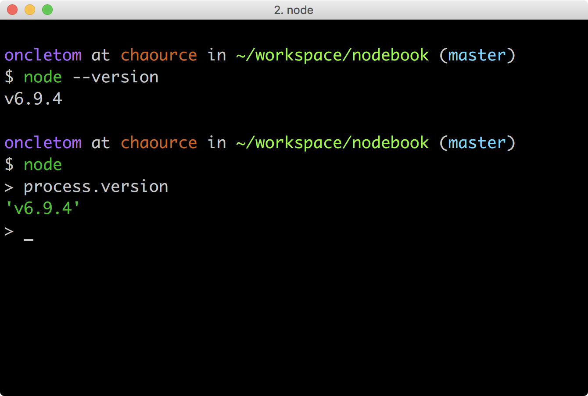

On aura beau discuter de Node et de son architecture, rien ne vaut quelques lignes de code pour mesurer ce à quoi nous avons affaire.
Ce chapitre contient tout ce qu’il faut savoir pour installer Node et développer son premier programme avec de bons design patterns.
-
Installer Node.js
-
Comprendre le vocabulaire JavaScript à disposition
-
Écrire son premier programme Node.js
-
Utiliser des modules tiers
Il est fortement recommandé d’utiliser un interpréteur de commandes (terminal ou shell). Les systèmes d’exploitation modernes en proposent un, y compris les versions récentes de Windows.
Si vous n’utilisez pas encore de terminal, voici une liste de recommandations non exhaustive pour vous aider :
macOS : iTerm2, Terminal.app ;
Linux : GNOME Shell, Terminator ;
Windows : PowerShell, Console.
Figure 1. Terminal iTerm2 sous macOS.
|
Remarque Versions de Node et npm
Le contenu de ce chapitre se réfère aux versions de Node v6 et npm v4. |
|
Remarque Utilisation des exemples
Les exemples légendés avec un nom de fichier sont disponibles dans le module npm dédié à cet ouvrage. Ils sont fonctionnels et destinés à être exécutés sur votre ordinateur : Exemple d’exécution du bloc de code légendé par
currency-main.js.$ npm install --global nodebook@latest $ nodebook chapter 2 $ node ./examples/currency-main.js |
- 1. Préparer son environnement
- 2. L’héritage UNIX
- 3. Invoquer Node.js
- 4. Node, JavaScript et ECMAScript
- 5. Design patterns
- 6. Bien utiliser npm au quotidien
- 7. Conclusion
1. Préparer son environnement
Installer Node n’est pas très compliqué. Il existe cependant plusieurs mécanismes d’installation. Ces mécanismes vont du téléchargement d’un installeur à une compilation manuelle via un terminal.
Voici mes recommandations pour savoir quelle solution d’installation choisir :
-
néophyte ou pressé(e) : installeur du site nodejs.org, paquet fourni par le système d’exploitation ;
-
vous commencez à maîtriser : Node Version Manager ;
-
à l’aise avec un terminal : Node Version Manager ;
-
envie ou besoin de mettre en production : Node Version Manager ;
-
besoin très spécifique et pointu : compiler depuis les sources.
L’utilisation et les fonctionnalités de nvm sont détaillées ci-après.
Une fois l’étape de l’installation terminée, la suite du livre ne fera plus de distinction entre les différents systèmes d’exploitation : c’est Node qui se chargera des abstractions !
1.1. Pour les différents systèmes d’exploitation
Certains systèmes d’exploitation fournissent leur propre mouture de Node. Les procédures les plus courantes sont décrites ci-après.
Une liste complète des systèmes supportés est maintenue à jour à cette adresse : nodejs.org/en/download/package-manager/.
Si malgré tout votre système n’y était pas listé, le mieux reste encore d'utiliser un binaire, de compiler depuis les sources ou de demander à votre moteur de recherche favori !
|
URL Téléchargements officiels
Les installeurs, les binaires et les sources de Node sont disponibles sur le site officiel de Node. |
1.1.1. Linux
Node est disponible dans les dépôts officiels des systèmes suivants :
-
Gentoo :
emerge nodejs -
Ubuntu >= 12.04, Debian >= jessie, Mint : voir ci-après
-
Fedora >= 18 :
sudo yum install nodejs npm -
Red Hat Enterprise et CentOS :
sudo yum install nodejs npm --enablerepo=epel -
Arch Linux :
pacman -S nodejs -
FreeBSD, OpenBSD :
pkg install node
Si votre système d’exploitation ne dispose pas de paquet pour Node, essayez dans l’ordre :
-
Node Version Manager (voir ci-après) ;
-
le téléchargement du binaire Node sur son site officiel ;
-
la compilation manuelle de Node.
1.1.2. La famille Debian et Ubuntu
Le paquet officiel nodejs fourni dans les dépôts apt est à éviter pour deux raisons :
-
le client npm n’est pas installé par défaut ;
-
le paquet n’est ni à jour ni bien maintenu.
La société NodeSource (nodesource.com/) maintient des binaires ainsi que des dépôts pour différentes distributions Linux.
L’installation d’une version à jour Node sous Debian, Ubuntu et consors devient aussi simple que les deux commandes suivantes :
curl -sL https://deb.nodesource.com/setup_6.x | sudo -E bash - sudo apt-get install -y nodejs
D’autres informations et architectures sont détaillées sur le dépôt GitHub des distributions NodeSource : github.com/nodesource/distributions.
1.1.3. macOS
macOS ne dispose pas de gestionnaire de paquet par défaut. Quelques projets populaires permettent toutefois d’y remédier :
-
homebrew :
brew install node -
MacPorts :
port install nodejs
Si vous n’utilisez aucun de ces gestionnaires de paquet, vous pouvez essayez :
-
Node Version Manager (voir ci-après) ;
-
le téléchargement du binaire Node sur son site officiel ;
-
la compilation manuelle de Node.
1.1.4. Windows
Le moyen le plus simple d’installer Node sous Windows est de télécharger l’installeur officiel depuis la page de téléchargements de Node.
Toutefois si vous utilisez déjà un gestionnaire de paquet, voici quelques recommandations :
-
scoop.sh :
scoop install nodejs -
Chocolatey :
choco install nodejs
Un raccourci pour lancer un terminal préparé pour Node et les commandes npm sera mis à disposition dans le menu Windows (voir capture ci-contre).
|
Attention Versions supportées de Windows
Windows XP, Windows Vista et les versions antérieures à celles-ci ne sont pas supportées. Il est déconseillé d’utiliser une version plus ancienne de Node pour contourner ce comportement. Il en va de la sécurité de vos applications. |
1.1.5. Raspberry Pi
Node a effectué des changements dans son architecture dans sa version 0.8. Ces changements ont permis d’éviter la compilation systématique sur des architectures processeur autre que l’Intel x86.
Des binaires et installeurs sont de ce fait disponibles pour Raspberry Pi, à base de processeur ARM, entre autres.
Des binaires et instructions sont disponibles sur le site officiel de Node, pour ARMv6, ARMv7 et ARMv8 : nodejs.org/en/download/.
curl -SLO https://nodejs.org/dist/v6.9.4/node-v6.9.4-linux-arm64.tar.xz tar -xJf "node-v6.9.4-linux-arm64.tar.xz" -C /usr/local --strip-components=1 ln -s /usr/local/bin/node /usr/local/bin/nodejs
Un paquet deb est également proposé pour les utilisateurs du système d’exploitation Raspbian.
Les instructions sont identiques à celles décrites dans la section précédente relative à la famille Debian et Ubuntu.
1.2. Node Version Manager
Node Version Manager est un logiciel permettant de gérer plusieurs versions de Node en même temps, sur une même machine. Il est communément abrégé en nvm.
nvm est l’équivalent de rvm dans le monde Ruby, de phpenv dans le monde PHP ou encore de virtualenv pour Python.
curl -o- https://raw.githubusercontent.com/creationix/nvm/v0.33.0/install.sh | bash nvm install v6 nvm alias default v6 (1)
| 1 | La version par défaut est désormais la dernière version stable de Node v6. |
Les instructions d’installation à jour se trouvent sur github.com/creationix/nvm.
|
Alternative n
n est une alternative à nvm écrite en… JavaScript. Elle a l’avantage d’être compatible avec tous les systèmes d’exploitation compatibles avec le Shell Unix Bash. |
|
Alternative Et pour Windows ?
nvm ne fonctionne pas sur les ordinateurs équipés de Windows. Il existe trois autres alternatives : nvm-windows, _nvmw et nodist. nvmw nécessite d’avoir Git et Python tandis que nodist se base uniquement sur Node. Dans les deux cas, leur installation est très simple. |
1.3. Docker
Docker est un outil d’isolation de processus système qui a le vent en poupe depuis 2014. Sa qualité principale est d’isoler les dépendances logicielles du système qui exécute le-dit processus. Une image Docker aura la même recette d’installation même si celle-ci est exécutée sous Linux, macOS ou encore Windows.
Lancer un interpréteur Node sans polluer le système hôte revient à exécuter l’image suivante :
docker run -ti --rm node:6-slim
L’intégralité des versions et architectures supportées est disponible sur le Docker Hub : hub.docker.com/_/node/
Nous nous repencherons sur Docker dans la section section Déploiement immutable du Chapitre 6.
1.4. Compiler depuis les sources
Certaines situations exigeront que vous compiliez Node. Ce sera le cas si vous cherchez à tirer parti au maximum des instructions de votre CPU ou si aucun binaire n’est disponible pour votre plate-forme.
La compilation manuelle requiert la présence de GCC 4.2+, de Python 2.6+ et de GNU Make 3.81+.
La procédure de compilation ressemble fortement à ceci :
curl -sS \ https://nodejs.org/dist/v6.9.4/node-v6.9.4.tar.gz \ | tar -zxf - cd node-v6.9.4 ./configure && make && make install
Les instructions pouvant varier fortement d’un système d’exploitation à l’autre, consultez les dépendances et instructions complètes à cette adresse github.com/nodejs/node/wiki/installation.
1.5. Outils de développement
Programmer pour Node revient dans la majorité des cas à écrire du JavaScript. Donc même si un éditeur de texte suffit, il est intéressant de connaître l’offre en outillage autour de Node et du développement front-end.
Les logiciels présentés dans les pages suivantes couvrent un large spectre de besoins : écriture du code, coloration syntaxique, inspection dynamique, débogage, productivité et intégration à l’écosystème Node.
Ceci a pour but de vous aider à piocher au plus près de vos goûts, à défaut de continuer à utiliser votre logiciel habituel.
1.5.1. Atom
Atom est un éditeur de code open-source, multilingue et multi plate-forme dont le développement a été initié par la société GitHub. Le logiciel est basé sur Electron, un environnent d’exécution d’applications de bureau reposant sur Node et HTML5.
Atom offre un écosystème de paquets pour étendre les fonctionnalités de l’éditeur à la carte.
L’expérience de développement sous Node en est ainsi facilitée grâce à des paquets dédiés à l’auto-complétion, un débogueur intégré mais aussi une vérification syntaxique sur mesure.
Une sélection de paquets vous attend dans l'annexe A.
1.5.2. Visual Studio Code
Visual Studio Code est un éditeur de code open-source, multilingue et multi plate-forme dont le développement a été initié par la société Microsoft. Le logiciel est basé sur Electron, un environnent d’exécution d’applications de bureau reposant sur Node et HTML5.
Un de ses atouts principaux réside dans son système IntelliSense. Il se sert du contexte disponible pour offrir une auto-complétion et des bulles d’aide pertinentes. C’est un éditeur parfaitement adapté au développement d’applications Node grâce à des fonctionnalités natives comme l’exécution, le débogage, la gestion de tâches et le versionnement – du code et des modules npm.
Visual Studio Code offre également un écosystème de paquets pour étendre les fonctionnalités de l’éditeur à la carte.
1.5.3. WebStorm

WebStorm est un environnement de développement (IDE) dédié au développement Web HTML5, JavaScript et Node.
Le logiciel est commercialisé par la société JetBrains, principalement connue pour ses IDE Pycharm (pour Python), PhpStorm (pour PHP) et IntelliJ IDEA (pour Java).
WebStorm est compatible Windows, Linux et macOS. Ses forces résident dans sa relative légèreté, une auto-complétion intelligente prenant en compte la résolution des modules CommonJS et AMD, une intégration des outils populaires dans l’écosystème Node (npm, eslint, Mocha, Karma, Bower etc.) ainsi qu’un débogage avancé.
Le téléchargement de WebStorm inclut une période d’essai de 30 jours.
|
Astuce Licence open source.
Vous pouvez demander à bénéficier d’une licence gratuite sous réserve d’une contribution active à un ou plusieurs projets open source. |
1.5.4. Visual Studio IDE

Visual Studio est un environnement de développement (IDE) édité par Microsoft. Historiquement dédié au développement sur Windows (Visual Basic, Visual C++), il gère aujourd’hui bien plus de langages (dont C#, HTML, CSS, JavaScript, ASP.Net). Il est surtout extensible, ce qui permet, entre autres, de lui apporter le support de Python ou encore Node.
Visual Studio est uniquement compatible Windows et existe en plusieurs éditions dont la Community Edition. Elle est gratuite et permet aussi l’ajout d’extensions.
Afin de bénéficier de l’intégration complète de l’écosystème Node, il est nécessaire d’installer l’extensions Node.js Tools for Visual Studio (aussi nommée NTVS). Elle est gratuite, open source et disponible sur GitHub.
2. L’héritage UNIX
Node peut paraître étrange selon notre propre familiarité avec la programmation système, avec les environnements UNIX (et dont découle GNU/Linux) et certains de leurs concepts.
Node étant une plate-forme utilisant JavaScript pour discuter avec une machine virtuelle connectée au système d’exploitation, il est intéressant de se remémorer des aspects un peu plus bas niveau.
2.1. Variables d’environnement
Lorsqu’un système d’exploitation est en état de marche, différents programmes fonctionnent pour fournir différents services : transmission du son, affichage vidéo, coordination des processus et de leurs ressources etc.
Ces programmes utilisent des espaces mémoire exclusifs, d’autres des espaces mémoire partagés. Un de ces espaces partagés contient des variables décrivant l'environnement dans lequel l’ensemble des programmes évoluent. Ces variables peuvent être utilisées par chacun de ces programmes.
Il est possible de les lister en utilisant la commande env :

Il nous est également possible d’en créer de nouvelles avec un syntaxe de CLÉ=VALEUR.
L’exemple suivant illustre la création d’une telle variable, son affichage puis son affichage en faisant appel à un autre programme, en l’occurence Node :
$ TEST=1 $ echo $TEST $ node -p 'process.env.TEST'
Nous nous heurtons à la portée des variables, locale à la session de notre terminal mais pas à l’interpréteur Node. La portée est réduite à notre session uniquement.
L’exemple suivant assigne une valeur à une variable d’environnement au niveau de l'exécution d’un programme :
$ TEST=1 node -p 'process.env.TEST' $ echo $TEST
La valeur 1 est affichée dans le processus Node mais pas dans notre session.
La portée est réduite à l’invocation uniquement.
Un opérateur permet de propager une variable, de l'exporter :
$ export TEST=1 $ node -p 'process.env.TEST'
Cet exemple nous a permis de définir une variable en dehors d’une invocation et de la rendre utilisable dans un autre processus.
env affiche toutes les variables exportées.
local ou set affichent toutes les variables locales et exportées.
2.2. La variable $PATH
La variable d’environnement $PATH est importante.
C’est son contenu qui régit où le système d’exploitation va chercher quel programme exécuter lorsque son nom est invoqué dans un terminal.
Prenons par exemple cette commande :
$ node --version
Où se trouve node sur notre système ?
Une autre commande nous permet de le savoir :
$ which node /usr/bin/node
La valeur de $PATH est une liste de chemins séparés par le symbole :, par exemple :
/usr/local/bin:/usr/bin:/bin:/usr/sbin:/sbin
Lorsque l’on demande l’exécution d’un programme – node par exemple – le système d’exploitation balaie chacun des répertoires du $PATH à la recherche d’un fichier exécutable nommé node.
L’algorithme est le suivant :
-
nodetrouvé dans/usr/local/bin? Non ; -
nodetrouvé dans/usr/bin? Oui.
La recherche s’arrête là, le chemin du programme est retourné et ledit programme est alors exécuté.
Certaines sections du livre feront mention à cette variable $PATH.
2.3. Processus
Un processus est un ensemble comprenant un programme, les variables actives et la mémoire allouée.
Chaque processus est identifié de manière unique avec un identifiant (pid – process identifier)
Un même programme peut être exécuté plusieurs fois en parallèle, à quelques exceptions près.
Chaque exécution se déroule dans un espace de mémoire isolé de tout autre exécution du même programme.
Une exception notable est le cas des sous-process (child process) où certaines ressources peuvent être partagées.
Dans les architectures processeur classiques (les x86 notamment), un processus fonctionne sur un seul processeur (CPU).
2.4. Interpréteur
Quand un programme est exécuté, le système d’exploitation fait face à deux options :
-
le fichier est un binaire compilé pour une architecture CPU compatible ;
-
le fichier est un script exécutable (code source lisible à l’œil nu), auquel cas il doit recourir à un interpréteur.
On peut avoir recourt à un interpréteur directement en faisant :
$ bash mon-script.sh
Ou bien en débutant mon-script.sh par #!/usr/bin/env bash pour sélectionner l’interpréteur bash (généralement disponible en tant que /bin/bash) puis en exécutant :
$ chmod +x mon-script.sh $ ./mon-script.sh
On peut ainsi décider quel interpréteur sera employé pour comprendre le script, le transformer en langage machine et l’exécuter à la volée.
2.5. Arguments de processus (argv)
Exécuter un programme peut parfois nécessiter un paramétrage contextuel et indépendant de la valeur des variables d’environnement. On lui passe ainsi des paramètres ou arguments qui lui sont spécifiques.
$ FOO_VAL='bar' $ ./argv.sh --foo=$FOO_VAL toto
Ces arguments de processus sont disponibles de manière brute, itérable sous forme de liste :
#!/usr/bin/env bash
echo $@ (1)
for ARG in $@; do
echo "Argument $ARG"; (2)
done| 1 | Affiche --foo=bar toto ; |
| 2 | Affiche tour à tour --foo=bar puis toto. |
Dans Node, vous retrouverez ces arguments dans la variable process.argv, détaillée par ailleurs dans ce même chapitre.
2.6. Streams et redirections
La dernière pierre angulaire des concepts UNIX est la présence des flux de données (streams) et de redirection de flux (pipes). L’idée est de pouvoir créer des programmes solides, résistant au temps et interopérables entre eux – peu importe leur interpréteur.
Un programme peut être amené à produire un flux de données et à le rediriger vers un emplacement, que ce soit un fichier (avec >), un terminal d’affichage ou un autre programme (avec |) :
$ date (1)
$ date > date.txt (2)
$ date | grep -Eo "\d{4}" (3)
| 1 | Redirection implicite vers le terminal – affiche la date du jour ; |
| 2 | Redirection vers un fichier – rien n’est affiché. |
| 3 | Redirection vers un programme puis vers le terminal – affiche l’année courante. |
Un programme peut ainsi être spécialisé dans l'affichage des processus, un autre dans le filtrage puis un autre dans l'extraction de valeurs. Cette pratique poussée de la modularité encourage la combinaison plutôt que le tout-en-un.
L’exemple suivant illustre l’affichage de données d’une session utilisateur, dans l’optique d’obtenir le nom du terminal (TTY) :
$ w 10:33 up 5 days, 18:48, 5 users, load averages: 1.36 1.62 1.75 USER TTY FROM LOGIN@ IDLE WHAT oncletom console - Fri15 5days -
Nous isolons la troisième ligne :
$ w | head -n 3 | tail -n 1 (1)
| 1 | En vrai, nous isolons les trois premières lignes avec head pour n’en garder que la dernière avec tail. |
Et finalement la valeur contenue dans la deuxième colonne avec awk :
$ w | head -n 3 | tail -n 1 | awk '{ print $2 }'
Vous pourrez en savoir plus sur le sujet dans la section streams de ce même chapitre.
Maintenant que nous avons vu tous ces concepts, reposons-nous le cerveau en parlant JavaScript.
3. Invoquer Node.js
C’est bien beau de parler d’histoire, d’architecture et d’interpréteur mais concrètement, comment exécuter du code écrit pour Node ?
La plate-forme Node fournit un exécutable système : node. C’est lui qui digèrera votre code, préparé à l’avance ou non :
-
nodeinvoquera le REPL, un interpréteur interactif ; -
node votre-script.jsinvoquera le dit script.
3.1. REPL
Un REPL est un interpréteur interactif exécuté dans votre terminal. Une fois invoqué, toutes les instructions écrites dans le terminal seront interprétées dès que vous presserez la touche ENTRÉE
L’intérêt principal d’utiliser le REPL est de prototyper rapidement du code ; code que l’on pourra éventuellement sauvegarder en tapant .+S+A+V+E+ENTRÉE.
Autre exemple : vous écrivez un programme qui nécessite que l’utilisateur saisisse lui-même du code à faire interpréter par Node. On pourrait penser à un programme en ligne de commande éducatif ou encore à une interface web qui commanderait un REPL distant.

Le REPL lui-même est écrit en ECMAScript.
Il est disponible dans le module Node natif repl dont la documentation est disponible à l’adresse suivante : nodejs.org/api/repl.html.
3.2. Exécution de script
L’exécution d’un script est très certainement l’invocation la plus classique de Node.
Node tente de charger et d’exécuter le fichier mentionné en argument de l’exécutable node.
Le processus Node reste actif tant que l'Event Loop a des instructions à traiter dans le futur.
Un certain nombre d’options sont acceptées par l’exécutable et modifient son comportement en conséquent :
-
node debug votre-script.js: active le mode débogage ; -
NODE_ENV=production node votre-script.js: transmet une variable d’environnement au processus et est accessible sous la formeprocess.env.NODE_ENV.

Pour connaître l’ensemble des options disponibles de l’exécutable Node, tapez node --help dans votre terminal.
Plusieurs options pourraient vous intéresser :
-
-e(ou--eval) : évalue du code ; -
-p(ou--print) : évalue et affiche le code ; -
-r(ou--require) : inclue un module ; -
--harmony(ou tout sous-ensemble de type--harmony-xx) : active des fonctionnalités expérimentales ; -
--v8-options: passe des options à la VM V8.
L’option -p est idéale pour évaluer du code en une ligne et visualier un résultat :
$ node -p 'Date()';
Tue Jan 24 2017 12:42:02 GMT+0100 (CET)
$ FIRST_NAME='Thomas' node -p '`Bonjour ${process.env.FIRST_NAME}`'
Bonjour Thomas
3.3. Script shell
Une autre alternative est de créer un fichier exécutable et de spécifier Node en tant qu’interpréteur.
C’est une opération utile pour rendre un programme accessible s’il est situé dans le $PATH système ou pour rendre un programme accessible lors de l’installation globale d’un paquet npm, entre autres.
Pour qu’un fichier soit rendu exécutable, nous devons nous assurer de deux choses :
-
du mode exécutable du fichier ;
-
de la présence de l’entête shebang.
Il faut pour cela respectivement :
-
ajouter le marqueur
xavec le programmechmod; -
démarrer le fichier par
#!<chemin vers l’interpréteur node>.
Voici le contenu d’un fichier (non suffixé avec l’extension .js) qui affiche les arguments passé à ce dit-script :
#!/usr/bin/env node (1)
'use strict';
const [,, ...args] = process.argv; (2)
console.log(args);| 1 | Demande au programme /usr/bin/env de retourner le chemin vers l’exécutable système node ; |
| 2 | Plus d’informations sur cette syntaxe dans la section décomposition de ce même chapitre. |
Le bloc suivant rend le fichier exécutable et l’exécute avec des arguments :
$ chmod +x print-args $ ./print-args Affiche moi [ 'Affiche', 'moi' ]
3.3.1. Scripts npm
L’utilisation de scripts npm permet d’invoquer Node de manière légèrement différente tout en masquant la complexité des scripts au niveau du fichier package.json.
L’invocation d’un script npm peut se faire de deux manières :
-
npm <script-natif>pour les scripts natifs à npm (start,publish,testetc.) ; -
npm run <script>pour les scripts additionnels définis par l’utilisateur.
$ npm start # équivalent de `npm run start`
Cette action exécute la commande contenue dans la section scripts.start du fichier package.json :
{
"name": "nodebook",
...
"scripts": {
"start": "node server.js"
}
}L’avantage de cette approche est double :
-
uniformisation du workflow au sein de tous les projets ;
-
npm modifie la variable système
$PATH.
Ce dernier point est important.
Cela signifie que l’exécution d’un script npm rend disponible les exécutables contenus dans le répertoire ./node_modules/.bin (voir l’encadré Répertoires et exécutables de la section Installation).
{
"name": "nodebook",
...
"scripts": {
"test": "eslint ." (1)
},
"devDependencies": {
"eslint": "^3.0.0"
}
}| 1 | Équivaut donc à ./node_modules/.bin/eslint ./src. |
3.4. Arguments d’invocation
Les arguments correspondent à un tableau de chaînes exposé par la propriété argv de la variable globale process.
Cette approche est recommandée pour créer du code générique et le personnaliser avec des arguments. Le script suivant illustre leur lecture par l’interpréteur Node :
'use strict';
console.log(process.argv);Ce script peut être invoqué de la manière suivante :
$ node argv.js -y 2014 2012 --title 'fromage baguette' (1)
| 1 | Affiche ["-y", "2014", "2012", "--title", "fromage baguette"]. |
Des librairies sont disponibles pour transformer les arguments en objets JavaScript, configurer des valeurs par défaut, de valider les valeurs, de les rendre obligatoire et même de générer automatiquement une aide à l’utilisateur.
Nous aborderons ces techniques avancées dans le Chapitre 5.
3.5. Plantage applicatif
Un programme Node s’arrête en général pour deux raisons :
-
la pile d’exécution est terminée et il n’y a plus rien à exécuter ;
-
une erreur s’est produite et n’a pas été capturée.
C’est souvent le cas lorsqu’une erreur se produit dans un endroit imprévu de notre code, lorsqu’une variable inexistante est appelée dans une branche de notre code appelée de manière asynchrone etc.
C’est une bonne chose que le programme s’arrête car cela nous permet de repérer l’erreur, de lire la trace et d’éventuellement patcher notre programme pour éviter cette même erreur dans le futur.
Quand un programme s’arrête de manière imprévue, le process émet un événement uncaughtException.
Il existe des cas où il est intéressant de l’écouter, notamment si la route d’un serveur cause une erreur et que l’on souhaite maintenir le service disponible malgré tout.
Dans ce cas, il convient d’écouter cet événement et de déterminer quelle est la meilleure action à suivre :
'use strict';
const http = require('http');
const {parse} = require('url');
const server = http.createServer((req, res) => {
// eslint-disable-next-line
const {query} = parse(reb.url, true); (1)
res.end();
});
server.listen(4001);
process.on('uncaughtException', err => console.error(err)); (2)
setTimeout(() => http.get('http://localhost:4001/'), 1000); (3)| 1 | En cas de réception d’une requête HTTP sur le port 4001, nous allons parser l’URL appélée — sauf qu’une typo s’est glissée (reb au lieu de req) et provoquera une exception ; |
| 2 | Cette exception remontera jusqu’au niveau du process qui déclenchera l’événement uncaughtException ; |
| 3 | Une seconde après voir lancé le script, une requête HTTP est envoyée au serveur, entrainant l’exécution du point 1. |
Encore une fois, il vaut mieux qu’un programme plante plutôt que de le protéger faiblement avec uncaughtException.
Il se peut qu’aucun code ne capture une erreur dans une promesse.
C’est notamment le cas s’il n’y a aucun appel à .catch() après un .then().
L’événement du process unhandledRejection est alors émis, sans pour autant faire planter le programme.
Ce comportement est toutefois amené à être modifié dans Node v8.
Il conviendrait alors de gérer le plantage d’un programme avec l’événement uncaughtException de la même manière que vous le feriez avec uncaughtException.
4. Node, JavaScript et ECMAScript
Nous l’avons vu dans le premier chapitre, Node utilise JavaScript comme principal langage de développement. Mais contrairement à Ruby, Python ou PHP dont le numéro de version annonce les fonctionnalités exploitables, qu’en est-il de Node et de JavaScript ?
Il faut se tourner du côté de V8 pour savoir ce que la machine virtuelle est capable de comprendre. Et comme chaque version de Node est associée à une version spécifique de V8, il suffit d’aller regarder les notes de version de V8 pour l’apprendre.
De manière générale, V8 implémente les spécifications approuvées ou en passe d’être approuvées par le comité gérant l’évolution du langage JavaScript : le TC39.
Enfin si vous n’avez pas envie de retourner la moitié du web pour savoir si V8, donc Node, supporte telle ou telle fonctionnalité, partez du principe que le JavaScript supporté par Chrome ou Opera correspond au JavaScript supporté par Node.
|
FAQ JavaScript ou ECMAScript ?
On peut lire régulièrement les termes JavaScript et ECMAScript comme s’il s’agissait de la même chose, y compris dans cet ouvrage. JavaScript et ECMAScript sont la même chose. JavaScript a été inventé en 1995 par Brendan Eich alors qu’il était employé de la société Netscape Communications. Microsoft lui emboîte le pas en incluant JavaScript dans son logiciel Internet Explorer, alors en version 3. Pour des raisons de droits de marque, il y est dénommé JScript. La spécification est ensuite validée par l’organisme Ecma International en juin 1997 sous le nom d'ECMAScript, standard ECMA-262. L’utilisation du terme JavaScript est resté dans le vocabulaire courant. Mais c’est bien d'ECMAScript dont on parle, vraiment. Adobe Flash utilise un dérivé d’ECMAScript, ActionScript et bien des machines virtuelles sont capables d’interpréter partiellement ou intégralement ECMAScript : Rhino en Java, Konq, BESEN en Object Pascal ou encore Esprima en… ECMAScript. |
La suite de l’ouvrage emploie principalement le terme ECMAScript.
4.1. Standard ECMA-262 Edition 5
ECMAScript a été standardisé dans sa version 5 en décembre 2009. Il s’agit de la version d’ECMAScript supportée depuis les débuts de Node. La révision 5.1 de juin 2011 est une correction mineure de la spécification.
Il s’agit d’une évolution majeure, dix ans après sa précédente édition, ECMAScript 3.
ECMAScript 5 introduit le mode strict limitant fortement les effets de bord indésirables, de nouvelles fonctionnalités pour Object et Array, le support natif de JSON et Function.prototype.bind.

4.2. Standard ECMA-262 Edition 2015, 2016 etc.
La spécification ECMAScript 2015 (ES2015) a été publiée en juin 2015 et succède à ECMAScript 5.
La spécification ES2015 a successivement été appelée ECMAScript Harmony, ECMAScript 6, puis ECMAScript 2015.
La page Web suivante référence l’état de l’implémentation d’ECMAScript 2015 ainsi que des versions ultérieures sur différentes plates-formes, dont Node :
Un autre site web se focalise uniquement sur les avancées de l’implémentation des versions ECMAScript pour Node : node.green/.
Certaines fonctionnalités sont disponibles uniquement en utilisant une option de démarrage spécifique, par exemple :
$ node --harmony script.js (1)
| 1 | Active toutes les fonctionnalités préliminaires. |
Une page explicative (en anglais) sur le site nodejs.org contient des indications à jour sur la compatibilité générale avec _ECMAScript 2015 : nodejs.org/en/docs/es6/
4.3. Rappel des primitives ECMAScript
Un des conforts apporté par l’utilisation d’ECMAScript dans Node est qu’il n’y a pas à se soucier de la compatibilité navigateur : vous pouvez utiliser le meilleur de JavaScript !
Ce résumé des primitives et fonctionnalités principales d'ECMAScript a pour but de vous apprendre ou de vous rappeler des fonctionnalités du langage disponibles dans Node v6.
4.3.1. String
Chaque élément d’une chaîne de caractères est encodé au format UTF-16 et peut donc contenir 16 bits de données.
L’opérateur typeof permet d’identifier une chaîne :
typeof 'Eyrolles'; (1)| 1 | Retourne 'string'. |
On peut connaître la longueur d’une chaîne via son attribut length.
'I ♥ JavaScript'.length; (1)| 1 | Retourne 14. |
On peut nettoyer les espaces englobant une chaîne avec la méthode trim :
' w w w '.trim(); (1)| 1 | Retourne 'w w w'. |
On peut connaître la position d’un ou plusieurs caractères via la méthode indexOf :
'I ♥ JavaScript'.indexOf('JavaScript'); (1)
'I ♥ JavaScript'.indexOf('I'); (2)
'I ♥ JavaScript'.indexOf('?'); (3)| 1 | Retourne 4 ; |
| 2 | Retourne 0 ; |
| 3 | Retourne -1, aucune occurrence n’ayant été trouvée. |
On peut collecter les occurrences correspondantes à un masque de caractères via la méthode match :
'I ♥ JavaScript'.match('♥'); (1)
'I ♥ JavaScript'.match(/\wa/g); (2)
'I ♥ JavaScript'.match('!'); (3)| 1 | Retourne ['♥'] ; |
| 2 | Retourne ['Ja', 'va'] ; |
| 3 | Retourne null. |
On peut remplacer les occurrences correspondantes à un masque de caractères via la méthode replace :
'I ♥ JavaScript'.replace('♥', 'love'); (1)
'I ♥ JavaScript'.replace(/[A-Z]/g, (char) => char.toLowerCase()); (2)| 1 | Retourne 'I love JavaScript' ; |
| 2 | Retourne 'i ♥ javascript'. |
Les template literals servent à composer des chaînes de caractères multilignes et/ou contenant des expressions ECMAScript :
'use strict';
const lang = 'JavaScript';
const { basename } = require('path');
console.log(`I ♥ ${lang}.
Cet exemple se trouve dans le fichier "${basename(__filename)}"`); (1)| 1 | Retourne 'I ♥ JavaScript.\nCet exemple se trouve dans le fichier "primitives/template-literals.js"'. |
Les template literals peuvent se préfixer d’un nom de fonction.
Ce mécanisme nommé tagged template literals sert de filtre pour interpréter et interpoler le contenu de chaque template (élément contenu dans ${}). Vous pouvez écrire vos propres fonctions mais aussi utiliser des modules npm.
L’exemple suivant illustre une sécurisation de contenu tiers à l’aide de la fonction safeHtml fournie par le module common-tags (npmjs.com/common-tags) :
'use strict';
const { safeHtml } = require('common-tags');
const text = '<script>alert(document.cookie)</script>';
console.log(`<div class="user-content">
${text}
</div>`); (1)
console.log(safeHtml`<div class="user-content">
${text}
</div>`); (2)| 1 | Affiche <div class="user-content">\n<script>alert(document.cookie)</script>\n</div> ; |
| 2 | Affiche <div class="user-content">\n<script>alert(document.cookie)</script>\n</div>. |
4.3.2. Boolean
Un booléen est une donnée de type logique qui peut être vraie ou fausse en prenant respectivement la valeur true ou false.
C’est un type de choix pour effectuer des assertions et vérifier des conditions.
'use strict';
const counter = 3;
console.log(counter); (1)
console.log(counter > 0); (2)
console.log(counter < 0); (3)
console.log(counter === 3); (4)
console.log(counter && counter > 0);(5)| 1 | Affiche 3 ; |
| 2 | Affiche true car la condition est vérifiée ; |
| 3 | Affiche false car la condition n’est pas vérifiée ; |
| 4 | Affiche true car 3 équivaut strictement à 3 ; |
| 5 | Affiche true car la condition est vérifiée. |
Une donnée peut être convertie en un booléen à l’aide de la fonction Boolean.
Toute valeur non-nulle convertie en booléen retournera true.
On dit alors que cette valeur est truthy.
À l’inverse, une valeur nulle, vide ou indéfinie sera dite falsy – null, 0, '', undefined, false et NaN.
'use strict';
const counter = 3;
console.log(Boolean('')); (1)
console.log(Boolean(counter)); (2)
if (counter) { (3)
console.log('if (counter) équivaut à if (Boolean(counter))');
}| 1 | Affiche false car il s’agit d’une chaîne vide convertie en booléen ; |
| 2 | Affiche true car il s’agit d’un nombre différent de 0 converti en booléen ; |
| 3 | counter vaut 3 donc la condition est vérifiée – elle est truthy – et exécutera la ligne d’après. |
|
Méfiance Double égalité vs. triple égalité
Il est recommandé d’utiliser l’opérateur de triple égalité pour s’assurer que deux éléments sont de même type et de même valeur. Les cas de figure où la double égalité évite les effets de bord indésirables sont peu nombreux… console.log('' == 0); (1)
console.log('' === 0); (2)
|
4.3.3. Number
Tous les nombres en ECMAScript sont des flottants (double précision) respectant le standard IEEE 754. Un nombre peut donc contenir 64 bits de données, comme en Python et PHP, entre autres.
L’opérateur typeof permet d’identifier un nombre :
typeof 42; (1)
typeof 13.37; (1)
typeof NaN; (2)| 1 | Retourne 'number' ; |
| 2 | Retourne également 'number', ce qui est souvent source de confusion. |
On peut effectuer des opérations mathématiques grâce aux opérateurs + (addition), - (soustraction), * (multiplication), / (division) et % (modulo).
L’exception dont il faut se méfier est l’addition, car le signe + est également l’opérateur de concaténation de chaîne.
Dès qu’une chaîne est détectée, l’opération d’addition est remplacée par une concaténation.
1 + 2; (1)
'1' + 2; (2)
1 + '2'; (2)
undefined + 2; (3)| 1 | Retourne 3 ; |
| 2 | Retourne '12' ; |
| 3 | Retourne NaN. |
Les fonctions parseInt et parseFloat permettent de respectivement de convertir en nombre entier et nombre flottant :
typeof 2.10 === 'number';
typeof '2.10' === 'string';
parseInt('2.10', 10); (1)
parseFloat('2.10'); (2)| 1 | Retourne 2 ; |
| 2 | Retourne 2.10. |
|
FAQ Le second argument de parseInt
Le second argument de la fonction |
La méthode isNaN permet d’être sûr de ne pas manipuler un nombre indésirable :
Number.isNaN(undefined + 1); (1)
Number.isNaN(2.10); (2)
Number.isNaN(undefined); (2)| 1 | Retourne true ; |
| 2 | Retourne false. |
Il également possible de choisir le nombre de décimales après la virgule avec la méthode toFixed.
Attention toutefois, la valeur retournée est de type String :
10.0101.toFixed(2); (1)
10.0101.toFixed(0); (2)
parseInt(10.0101, 10);(3)| 1 | Retourne '10.01' ; |
| 2 | Retourne '10' ; |
| 3 | Retourne 10. |
4.3.4. Function
Les fonctions permettent d’isoler des portions de code et de les rendre réutilisables via l’utilisation de paramètres.
Vous pouvez les déclarer via une expression ou une déclaration assignée à une variable. La déclaration d’une fonction est soumise à la portée du contexte dans lequel le bloc de code est placé. Une fonction peut être créée de trois manières :
-
nommée
function nomDeLaFonction(){ … }; -
anonyme
function (){ … } -
fléchée
() ⇒ { … }.
Les fonctions anonymes sont fréquemment employées en tant que callbacks ou dans des contextes itératifs (tels Array.map etc.)
Il est important de noter que la déclaration d’une fonction et son exécution sont deux choses différentes.
'use strict';
function isEqualTo (value, compareWith) {
return compareWith.some(v => v === value); (1)
}
const isNotNullOrUndefined = function (value) {
return !isEqualTo(value, [null, undefined]);
};
function filterSparseArray (array) {
return array.filter(isNotNullOrUndefined); (2)
}
(() => { (3)
// eslint-disable-next-line no-sparse-arrays
const values = [,3,,,1];
console.log(typeof Date); (4)
console.log(isNotNullOrUndefined(null));(5)
console.log(filterSparseArray(values)); (6)
})();
// eslint-disable-next-line no-undef
console.log(values); (7)| 1 | Utilisation d’une fonction fléchée (arrow function) en tant que fonction anonyme de callback ; |
| 2 | Utilisation d’une fonction nommée comme callback de la méthode Array.map ; |
| 3 | Illustration d’une Immediatly Invocked Function Expression, aka IIFE aka fonction immédiatement exécutée ; |
| 4 | Retourne 'function' ; |
| 5 | Retourne false — la valeur étant nulle ; |
| 6 | Retourne [ 3, 1 ] — un tableau filtré des valeurs nulles ou égales à undefined ; |
| 7 | Lève une exception car la constante values n’est pas définie dans ce scope. |
Le code contenu dans le bloc déclaratif d’une fonction crée une portée (ou scope) qui est invisible au contexte parent de l’exécution de cette fonction. Il s’agit d’une excellente manière d’isoler des variables, notamment pour éviter des effets de bord indésirables liés à l’état d’exécution de vos scripts.
L’exemple précédent illustre un tel cas de portée en contenant la constante values dans l'IIFE : le contexte parent n’a aucune connaissance de son existence — et c’est tant mieux.
Une syntaxe abrégée est disponible via les fonctions fléchées :
|
|
|
|
|
|
|
|
|
|
|
|
Il est possible de composer des fonctions à partir d’autres fonctions en utilisant la méthode bind.
Ce pattern est extrêmement puissant car il permet de modifier le contexte d’exécution de ladite fonction.
'use strict';
const FR = {
capitalCity: 'Paris',
currency: 'EUR'
};
const UK = {
capitalCity: 'London',
currency: 'GBP'
};
const formatCurrency = function (amount){
return `${amount} ${this.currency}`;
};
const priceInEUR = formatCurrency.bind(FR);
const priceInGBP = formatCurrency.bind(UK);
console.log(priceInEUR(100)); (1)
console.log(priceInGBP(100)); (2)| 1 | Retourne '100 EUR' ; |
| 2 | Retourne '100 GBP'. |
bind est également capable de créer une nouvelle fonction à laquelle vous auriez appliqué partiellement des arguments :
'use strict';
const helloSomething = (text) => {
console.log('Hello ' + text);
};
const helloWorld = helloSomething.bind(null, 'World');
const helloParis = helloSomething.bind(null, 'Paris');
helloWorld(); (1)
helloParis(); (2)
helloSomething('Paris');(2)| 1 | Affiche 'Hello World' ; |
| 2 | Affiche 'Hello Paris'. |
Ce procédé est particulièrement utile pour rendre des fonctions génériques et composer des dérivées, notamment dans le cas de pagination.
Les méthodes call et apply reposent sur le même principe mais à la différence de bind, elles exécutent immédiatement la fonction.
Le seul élément différenciant correspond à la syntaxe d’application des arguments :
'use strict';
const wrap = (prefix, suffix, text) => prefix + text + suffix;
console.log(wrap.call(null, '<', '>', 'title')); (1)
console.log(wrap.apply(null, ['<', '>', 'title'])); (1)| 1 | Retourne '<title>' dans les deux cas. |
4.3.5. Array
L’opérateur typeof ne permet pas d’identifier un tableau. Il faut pour cela privilégier la méthode isArray :
typeof []; (1)
Array.isArray([]);(2)| 1 | Retourne 'object' ; |
| 2 | Retourne true. |
Il est possible de connaître la longueur d’un tableau en utilisant la propriété length :
[1, 2, 3].length; (1)| 1 | Retourne 3. |
La méthode join permet de concaténer tous les éléments d’un tableau avec le séparateur de votre choix :
[1, 2, 3].join(', ') + '… soleil'; (1)| 1 | Retourne '1, 2, 3… soleil'. |
À l’inverse, la méthode from prend en charge la création de tableau à partir d'itérables ou de structures similaires à des tableaux, comme arguments ou NodeList (dans un navigateur).
'use strict';
function logArguments() {
console.log(Array.from(arguments));
}
const logIterable = (...args) => {
console.log(Array.from(args));
}
console.log(Array.from('camembert')); (1)
logArguments(1, 'b', 3, 'd'); (2)
logIterable(1, 'b', 3, 'd'); (3)| 1 | Retourne [ 'c', 'a', 'm', 'e', 'm', 'b', 'e', 'r', 't' ] ; |
| 2 | Retourne [ 1, 'b', 3, 'd' ] ; |
| 3 | Retourne [ 1, 'b', 3, 'd' ]. |
En complément, la méthode concat permet de concaténer d’autres éléments :
'use strict';
const a = [1, 2];
console.log(a.concat(3)); (1)
console.log(a.concat([3, 4])); (2)
console.log(a.concat([3, 4], [4, 5])); (3)| 1 | Retourne [ 1, 2, 3 ] ; |
| 2 | Retourne [ 1, 2, 3, 4 ] ; |
| 3 | Retourne [ 1, 2, 3, 4, 4, 5 ] — cf. Map et Set. |
La fonction de tri via la méthode sort se base sur des comparaisons positives, négatives ou neutres pour retourner un nouveau tableau, réindexé :
[1, 3, 2].sort((a, b) => a - b); (1)
[1, 3, 2].sort((a, b) => b - a); (2)
['A', 'b', 'c', 'a'].sort((a, b) => a.localeCompare(b))); (3)| 1 | Retourne [1, 2, 3] ; |
| 2 | Retourne [3, 2, 1] ; |
| 3 | Retourne ['a', 'A', 'b', 'c']. |
Les méthodes suivantes sont des nouveautés d’ECMAScript 5. Elles facilitent énormément les itérations sur les tableaux tout en ajoutant une orientation fonctionnelle, utile pour la lisibilité du code.
La méthode map permet de retourner un nouveau tableau avec des valeurs modifiées :
'use strict';
const newArray = ['a', ' B', 'c '].map(value => {
return value.trim().toUpperCase();
});
console.log(newArray); (1)| 1 | Retourne ['A', 'B', 'C']. |
La méthode filter quant à elle retourne un nouveau tableau ne contenant que les éléments retournant un booléen truthy :
'use strict';
const values = [1, 'a', 120, undefined, 0];
console.log(values.filter(value => value < 10)); (1)
console.log(values.filter(value => value)); (2)| 1 | Retourne [1, 0] ; |
| 2 | Retourne [1, 'a', 120] ; |
De manière similaire, les méthodes some et every retournent un booléen si au moins une itération et toutes les itérations ont renvoyé une valeur positive :
'use strict';
const values = [1, 'a', 120, undefined, 4];
const isUndefined = (value) => value === undefined;
console.log(values.some(isUndefined)); (1)
console.log(values.every(isUndefined)); (2)
console.log([undefined, undefined].every(isUndefined));(3)| 1 | Renvoie true puisqu’au moins une valeur équivaut à undefined ; |
| 2 | Renvoie false puisque toutes les valeurs n’équivalent pas à undefined ; |
| 3 | Renvoie true puisque toutes les valeurs sont égales à undefined. |
ECMAScript 2015 introduit les méthodes find et findIndex, respectivement pour retourner une valeur et son index selon une fonction prédicat :
'use strict';
const DATA = ['am', 'stram', 'gram'];
const FIND = 'stram'; (1)
let found;
// Avant ES2015
DATA.some((value) => {
if (value === FIND) {
found = value;
return true;
}
});
console.log(found); (2)
// Depuis ES2015
found = DATA.find(value => value === FIND);
console.log(found); (2)
const foundIndex = DATA.findIndex(value => value === FIND);
console.log(foundIndex); (3)| 1 | Valeur que l’on recherche ; |
| 2 | Affiche stram (valeur recherchée) ; |
| 3 | Affiche 1 (index de la valeur recherchée). |
La méthode reduce a un comportement similaire à sort mais fonctionne de manière accumulative :
'use strict';
let result;
const pairs = [[1, 2], [3, 4], [5, 6]];
result = pairs.reduce((acc, pair) => acc + pair[0] + pair[1], 0);
console.log(result); (1)
result = pairs.reduce((acc, pair) => {
acc[0] += pair[0];
acc[1] += pair[1];
return acc;
}, [0, 0]);
console.log(result); (2)| 1 | Affiche 21 ; |
| 2 | Affiche [9, 12]. |
|
FAQ Tableau non contigu.
Il se peut que des valeurs soient manquantes dans un tableau. On dit alors que les valeurs ne sont pas contiguës. Cela affecte les fonctions itératives et peut se révéler problématique si vous cherchez à conserver cette absence de valeurs : const a = [1,, 3, undefined, null]; const print = (value) => console.log(value); a.length; (1) a.forEach(print); (2)
|
4.3.6. Object
Dans ECMAScript, tout est objet. C’est le prototype qui détermine le comportement dudit objet.
Les objets peuvent être créés de manière littérale, avec la fonction Object.create ou via un constructeur.
À la différence d’un Array, il est possible de nommer une clé par une chaîne de caractères – statique ou dynamique – ou avec un symbole.
'use strict';
const litteral = { literally: 'lateral' };
const litteralCopy = litteral;
const objectCreated = Object.create(litteral);
console.log(litteral.literally); (1)
console.log(objectCreated.literally); (2)
console.log(litteral === litteralCopy); (3)
console.log(litteral === objectCreated);(4)| 1 | Retourne 'lateral' ; |
| 2 | Retourne également 'lateral' ; |
| 3 | Retourne true, les deux objets étant la même instance ; |
| 4 | Retourne false, les deux objets étant deux instances différentes. |
L’opérateur typeof permet d’identifier la primitive d’une variable — au sens d’ECMAScript, pas au sens logique de votre application, c’est à dire le prototype d’un objet.
L’opérateur instanceof ou la méthode getPrototypeOf permettent justement de comparer les appartenances logiques.
'use strict';
function PseudoBookClass(title) {
this.title = title.trim();
}
const nodeBook = new PseudoBookClass('Node.js universel');
console.log(typeof PseudoBookClass); (1)
console.log(typeof nodeBook); (2)
console.log(nodeBook instanceof PseudoBookClass); (3)
console.log(Object.getPrototypeOf(nodeBook)); (4)
console.log(Object.getPrototypeOf(nodeBook).constructor.name); (5)| 1 | Affiche function ; |
| 2 | Affiche object ; |
| 3 | Affiche true ; |
| 4 | Affiche [object Object] ; |
| 5 | Affiche PseudoBookClass. |
Object.keys extrait les propriétés énumérables d’un objet, à la différence de Object.getOwnPropertyNames() :
'use strict';
const busStop = {
name: 'Vassal Road',
services: ['36', 'N136', '185']
};
Object.defineProperty(busStop, 'internal_code', {
value: '4811',
enumerable: false
});
console.log(Object.keys(busStop)); (1)
console.log(Object.getOwnPropertyNames(busStop)); (2)| 1 | Affiche [ 'name', 'services' ] ; |
| 2 | Affiche [ 'name', 'services', 'internal_code' ]. |
Object.defineProperty permet de régler finement d’autres spécificités d’un objet, dont des accesseurs (getters) et des mutateurs (setters).
Ces attributs spéciaux nous autorisent la création de propriétés calculées, de propriétés en lecture seule ou de maitriser l’écriture d’une propriété :
'use strict';
const book = {
title: 'Node.js – bonnes pratiques de programmation modulaire',
};
Object.defineProperties(book, { (1)
date_published: {
set: function(date) { (2)
if (isNaN(Date.parse(date))) {
throw new Error('Invalid date given: ' + date);
}
else {
this._published_at = new Date(date); (3)
}
},
get: function() { (4)
return this._published_at;
}
}
});
book.date_published = '2017-05-01'; (5)
console.log(book.date_published instanceof Date);(6)
book.date_published = '2017-05-0'; (7)| 1 | Nous définissons de nouvelles propriétés pour l’objet book ; |
| 2 | Définition d’un mutateur pour la propriété date_published ; |
| 3 | La valeur date est convertie en objet et stockée dans la propriété _published_at ; |
| 4 | Définition d’un accesseur pour la propriété date_published ; |
| 5 | Appel du mutateur qui, en interne, convertit la chaîne de caractères en objet Date ; |
| 6 | Appel de l'accesseur et affiche true car il s’agit bien d’une instance de Date ; |
| 7 | Lance une exception car la chaîne assignée n’est pas une date valide. |
Trois choses sont à souligner dans cet exemple.
Tout d’abord, notre définition de mutateur ajoute de la sécurité.
Sa valeur est garantie et nous savons que book.date_published sera systématiquement une date.
Inconvénient, nous n’avons d’autre choix que de stocker la date dans une autre propriété, ici book._published_at.
Et rien ne nous empêche de la modifier directement et d’invalider une partie de notre raisonnement…
Il nous faudrait trouver un moyen de stocker la valeur du _mutateur_ et de l'accesseur de manière privée.
Enfin, les propriétés sont assignées uniquement à l’objet book. Si nous voulions les généraliser à plusieurs instances d’objets se ressemblant, nous les définirions alors dans une classe.
Nous pouvons définir des accesseurs et des mutateurs avec une notation raccourcie, ayant exactement le même effet. Reprenons l’exemple précédent :
'use strict';
const book = {
title: 'Node.js – bonnes pratiques de programmation modulaire',
set date_published(date) { (1)
if (isNaN(Date.parse(date))) {
throw new Error('Invalid date given: ' + date);
}
else {
this._published_at = new Date(date);
}
},
get date_published () {
return this._published_at;
},
get year_published () { (2)
return this.date_published.getFullYear();
}
};
book.date_published = '2017-05-01';
book.year_published = '2014'; (3)| 1 | Définition raccourcie du mutateur pour la propriété date_published ; |
| 2 | Définition raccourcie de l'accesseur pour la propriété year_published – notez qu’on ne définit pas de mutateur pour cette même propriété ; |
| 3 | Lance une exception car la propriété year_published est définie en tant qu'accesseur uniquement ; on ne peut donc pas lui assigner de valeur. |
Object.assign étend des structures existantes et la définition de valeurs par défaut.
Les clés et valeurs sont copiées de gauche à droite avant d’être assignées dans le premier paramètre :
'use strict';
const DEFAULTS = {
concurrency: 10,
timeout: 'https',
tags: []
};
const userOptions = {
url: 'https://oncletom.io/node.js',
tags: ['img', 'h1']
};
const testOptions = {
url: null,
env: 'test'
};
const mergedOptions = Object.assign({}, DEFAULTS, userOptions); (1)
Object.assign(testOptions, userOptions);
console.log(DEFAULTS); (2)
console.log(mergedOptions.tags); (3)
console.log(Object.keys(testOptions));(4)| 1 | Les clés et valeurs de DEFAULT et celles de userOptions sont copiées dans un objet vide puis retournées dans mergedOptions ; |
| 2 | Affiche { concurrency: 10, timeout: 'https', tags: [] } ; |
| 3 | Affiche [ 'img', 'h1' ] ; |
| 4 | Affiche [ 'url', 'env', 'tags' ] — l’objet testOptions est donc modifié. |
4.3.7. Date
L’opérateur typeof ne permet pas d’identifier une date. Il convient d’utiliser instanceof :
typeof (new Date('2014-03-24')); (1)
(new Date('2014-03-24 13:37')) instanceof Date; (2)
typeof Date.parse('2014-03-24 13:37'); (3)| 1 | Retourne 'object' ; |
| 2 | Retourne true ; |
| 3 | Retourne 'number', car il s’agit d’une date exprimée en millisecondes depuis le 1er janvier 1970 (temps EPOCH). |
Il également possible d’obtenir la date actuelle exprimée en millisecondes avec Date.now :
Date.parse(new Date()); (1)
Date.now(); (2)| 1 | Retourne 1397381941000 ; |
| 2 | Retourne 1397381941031, équivalent à la syntaxe précédente donc, la précision à la milliseconde près en plus. |
4.3.8. Décomposition
L’affectation par décomposition (destructuring) est une manière élégante et intuitive de piocher dans un tableau ou dans un objet. La décomposition n’altère pas le contenu des variables décomposées.
Les valeurs d’un tableau sont décomposées dans l’ordre tandis que l’opérateur spread (…) permet d’assigner le reste des valeurs dans une seule et même variable ou constante :
'use strict';
const cities = ['Bordeaux', 'Toulouse', 'Montpellier', 'Aix-en-Provence'];
const [chocolatineCity, ...trueSouth] = cities; (1)
console.log(chocolatineCity);(2)
console.log(trueSouth); (3)
console.log(cities); (4)| 1 | Décompose la première valeur du tableau et assigne le reste dans une autre constante ; |
| 2 | Affiche Bordeaux ; |
| 3 | Affiche [ 'Toulouse', 'Montpellier', 'Aix-en-Provence' ] ; |
| 4 | Affiche [ 'Bordeaux', 'Toulouse', 'Montpellier', 'Aix-en-Provence' ]. |
Il est également possible de sauter des valeurs en ne nommant pas autant de variables ou de constantes lors de la décomposition :
'use strict';
const count = ['un', 'zapzap', 'deux', 'trois', 'quatre'];
const [first, ,...end] = count; (1)
console.log(first); (2)
console.log(end); (3)| 1 | Assigne la première valeur dans la constante first, saute la seconde et assigne le reste des valeurs dans end ; |
| 2 | Affiche un ; |
| 3 | Affiche [ 'deux', 'trois', 'quatre' ]. |
Le même mécanisme existe pour les objets, y compris dans des arguments de fonction :
'use strict';
/* eslint-disable no-sparse-arrays */
const { join } = require('path'); (1)
const config = {
debug: true,
};
const { debug: configDebug } = config;
const { isProd, name = 'Demo' } = config;
const logConfigDebug = ({ debug }) => { (2)
console.log(debug);
};
console.log(join('folder', 'filename.txt')); (3)
console.log(configDebug); (4)
console.log(isProd); (5)
console.log(name); (6)
logConfigDebug(config, 'zero', 'un', 'deux'); (7)| 1 | Destructure la fonction join directement depuis le require de module ; |
| 2 | Destructure la valeur debug du premier argument; |
| 3 | Affiche folder/filename.txt – folder\filename.txt sous Windows ; |
| 4 | Affiche true car la clé debug a été décomposée en configDebug ; |
| 5 | Affiche undefined – cette valeur n’existe pas dans l’objet config ; |
| 6 | Affiche Demo – cette valeur est complétée par défaut dans l’assignation ; |
| 7 | Affiche true. |
Comme indiqué en début de section, il est possible de nommer les clés de manière dynamique mais aussi d’utiliser une syntaxe raccourcie d’assignation de valeur :
'use strict';
const companies = ['SNCF', 'Reinfe'];
const sncf = companies[0];
const companyDetails = {
[sncf]: { (1)
country: 'France',
},
};
companyDetails[ companies[1] ] = { (2)
country: 'Spain'
};
console.log(companyDetails); (3)
console.log({ sncf, foo: 'bar' }); (4)
console.log({ sncf: sncf, foo: 'bar' }); (5)| 1 | Utilise la valeur d’une variable comme nom de clé ; |
| 2 | Syntaxe alternative possible, utile lorsqu’un objet existe déjà ; |
| 3 | Affiche { SNCF: { country: 'France' }, Reinfe: { country: 'Spain' } } ; |
| 4 | Utilise la syntaxe d’assignation raccourcie, donc assigne la valeur de sncf à la clé sncf — affiche { sncf: 'SNCF', foo: 'bar' } ; |
| 5 | Idem mais sans la syntaxe d’assignation raccourcie. |
4.3.9. Paramètres du reste
Les paramètres du reste (rest parameters) utilisent une syntaxe identique à la décomposition mais opèrent au niveau des arguments de fonctions :
'use strict';
const returnNameAndArgs = (name, ...args) => {
return { name, args };
};
const a = { name: 'Cabécou'};
const b = { name: 'Chaource' };
const { name, args:cheeses } = returnNameAndArgs('Fromages', a, b); (1)
console.log(name); (2)
console.log(cheeses); (3)| 1 | Assigne la constante décomposée args en tant que constante cheeses ; |
| 2 | Affiche Fromages ; |
| 3 | Affiche [ { name: 'Cabécou' }, { name: 'Chaource' } ] – |
En bref, ils sont l’équivalent de l’ancienne variable magique arguments mais avec une meilleure finesse quant aux paramètres concernés.
Les éléments retournés par les paramètres du reste ont aussi l’avantage d’être un véritable objet de tableau – arguments est itérable mais n’est pas un tableau et ne bénéficie donc pas des méthodes de compréhension telles que forEach, map, etc.
4.3.10. Map et Set
Deux nouvelles interfaces d’itération sont disponibles depuis ECMAScript 2015 : Map et Set.
Elles font penser respectivement à Object et Array mais diffèrent de ces primitives sur les points suivants :
-
elles garantissent l'unicité par référence des valeurs ;
-
elles garantissent l'ordre des valeurs ;
-
elles exposent la même interface de navigation et de manipulation ;
-
elles peuvent être créées à partir d’un itérable ou d’un tableau (de valeurs ou de clés+valeurs).
'use strict';
const primes = new Set([11, 13]); (1)
const primesArray = Array.from(primes);
console.log(primesArray); (2)
const example = new Set();
example.add(2);
example.add(3);
example.add([5, 7]);
example.add([5, 7]); (3)
example.add(primes); (4)
example.add(primesArray);
example.add(primesArray); (5)
console.log(example); (6)
console.log([...example]); (7)| 1 | Construit un Set depuis un Array ; |
| 2 | Reconstruit un Array à partir des valeurs du Set et affiche [ 11, 13 ]; |
| 3 | Ce tableau sera ajouté car s’il est identique au précédent, il s’agit d’un objet différent, donc d’une référence d’objet différente ; |
| 4 | On peut ajouter un Set en tant que valeur de Set si on le souhaite ; |
| 5 | À l’inverse du point 3, l’ajout multiple d’une référence à un même objet (ici, primesArray) ne fonctionnera pas ; |
| 6 | Affiche Set { 2, 3, [ 5, 7 ], [ 5, 7 ], Set { 11, 13 }, [ 11, 13 ] } ; |
| 7 | Utilise la décomposition pour extraire les valeurs du Set et affiche [ 2, 3, [ 5, 7 ], [ 5, 7 ], Set { 11, 13 }, [ 11, 13 ] ]. |
Map offre quelques avantages à l’utilisation d’un Object :
-
les clés peuvent être de n’importe quel type (y compris une référence à un autre objet ou tableau ECMAScript) ;
-
.sizeretourne le nombre de clés de la Map ; -
l’itération est très simple avec
for..of,forEachou même en utilisant la décomposition.
'use strict';
const store = new Map();
const primes = new Set([2, 3, 5]);
const config = {
debug: true,
};
store.set('config', config);
store.set(primes, { count: primes.size }); (1)
store.forEach((value, key) => console.log(key, value)); (2)
for (let [key, value] of store) {
console.log(key, value); (3)
}
console.log(store.size); (4)
console.log(...store); (5)
store.clear();
console.log(...store); (6)| 1 | Assigne un objet en référence de Map vers un objet de type Set ; |
| 2 | Parcourt chaque enregistrement de Map et en affiche sa clé et sa valeur ; |
| 3 | Ditto mais avec l’expression for..of ; |
| 4 | Affiche 2 car notre Map comporte 2 enregistrements ; |
| 5 | Affiche les enregistrements de la Map sous forme de paires [clé, valeur]; |
| 6 | Affiche (rien) car la Map a été vidée à la ligne précédente. |
Toutefois Map et Set ont quelques inconvénients :
-
absence des méthodes de compréhension de tableau (
map,reduceetc.) ; -
pas de conversion native en JSON.
À vous de choisir entre Object et Map ou entre Array et Set en fonction de la rigueur de vos besoins.
|
Documentation Pour en savoir plus
La documentation complète de |
4.3.11. Class
ECMAScript 2015 ajoute au langage des sucres syntaxiques facilitant la création et maintenance d’objets métier. Nous bénéficions d’une véritable notion de constructeur, de méthodes statiques et même d’extension de prototype — on pourrait parler d’héritage mais nous n’avons pas envie d’aller dans cette direction, pas vrai ?
Tout ce que nous attachions auparavant à une fonction, nous nous référons désormais à une classe à proprement parler.
En voici un exemple de définition :
'use strict';
class View {
constructor(config) {
this.config = Object.assign({}, config);
}
render() {
throw new Error('Extend the View class to render content.');
}
static removeDuplicates(char, content) {
return content.replace(new RegExp(`[${char}]{2,}`), char);
}
}
module.exports = View;La définition de la classe View comporte trois fonctions :
-
constructor: le constructeur invoqué à chaque nouvelle instantiation via l’opérateurnew; -
render: une méthode partagée par toutes les instances deView— équivalent àView.prototype.render = function () { … }; -
removeDuplicates: une méthode statique, utilisable indépendamment des instances deView— équivalent àView.removeDuplicates = () ⇒ ({ … }).
L’exemple suivant illustre le comportement de la classe View :
'use strict';
const View = require('../class-view.js');
const htmlView = new View({ blacklist: ['object', 'iframe']});
console.log(typeof htmlView); (1)
console.log(htmlView instanceof View); (2)
console.log(htmlView.config); (3)
console.log(View.removeDuplicates('.', 'Node...js')); (4)
try {
htmlView.render({ title: 'Node.js' });
}
catch (err) {
console.error(err); (5)
}| 1 | Affiche object ; |
| 2 | Affiche true ; |
| 3 | Affiche { blacklist: [ 'object', 'iframe' ] } — l’objet de configuration initial ; |
| 4 | Affiche Node.js ; |
| 5 | Affiche une exception personnalisée. |
Nous l’avons vu précédemment au niveau des objets, ECMAScript permet de définir des accesseurs.
L’exemple suivant illustre leur définition au sein d’une classe :
'use strict';
class Book {
constructor(title) {
this.title = title;
this.GS1;
this.ISBN;
}
get EAN13() {
return this.GS1 + '-' + this.ISBN;
}
set EAN13(value) {
const EAN13 = value.split('-');
this.GS1 = EAN13[0];
this.ISBN = EAN13[1];
}
}
const cssBook = new Book('CSS maintenables');
cssBook.EAN13 = '978-2212136401';
console.log(cssBook.GS1); (1)
console.log(cssBook.ISBN); (2)
console.log(cssBook.EAN13);(3)| 1 | Retourne '978'; |
| 2 | Retourne '2212136401' ; |
| 3 | Retourne '978-2212136401'. |
La logique des accesseurs est ainsi partagée entre tous les objets étant des instances de Book.
L’exemple suivant illustre deux classes héritant de notre classe View :
'use strict';
const View = require('../class-view');
class HTMLView extends View {
constructor (options) {
super(Object.assign({ doctype: 'html'}, options));
this.doctype = this.config.doctype;
}
render (data) {
return `<!DOCTYPE ${this.doctype}>
<html>
<title>${data.title}</title>
<body>
<h1>${data.title}</h1>
<main>${data.content}</main>
</body>
</html>`;
}
}
class TextView extends View {
render (data){
const underline = '#'.repeat(data.title.length + 2);
return `# ${data.title}
${underline}
${data.content.trim()}`
}
}
const viewData = {title: 'Node.js', content: ' Hello World! '};
console.log((new HTMLView()).render(viewData)); (1)
console.log((new TextView()).render(viewData)); (2)| 1 | Retourne une chaîne de HTML après avoir interpolé les variables avec leur valeur respective ; |
| 2 | Retourne la chaîne de texte # Node.js\n#########\n\nHello World!. |
HTMLView surcharge le constructeur tandis que TextView se contente du comportement par défaut défini par le constructeur de View.
L’appel à la fonction super revient à appeler le constructeur de la classe que l’on étend.
Ne pas l’appeler revient à ne pas exécuter le constructeur de la classe parent.
S’il est désormais plus sûr d’utiliser l’extension de chaîne prototypale, il ne faut pas abandonner la composition pour autant.
Il est en effet bien plus simple de réutiliser (et de tester) des fonctions agnostiques de contexte — agnostiques du this — que de maintenir de grosses classes héritant sur plusieurs niveaux.
4.3.12. Promise
L’organisation du code autour des callbacks est difficile et ce, que ce soit en terme de maintenance, de gestion des erreurs ou de propagation d’information.
Un motif a émergé en réponse à cette complexité grandissante : les promesses. Il s’agit d’une primitive à maitriser et disponible nativement à la fois dans Node et les navigateurs modernes.
Historiquement, de nombreuses librairies ont proposé leur propre implémentation de promesses mais avec le défaut de ne pas être interopérables entre elles. La spécification Promise/A+ a émergé pour établir un standard de compatibilité. ECMAScript 2015 introduit nativement cette API, la rendant alors disponible pour le web et pour Node, avec ou sans polyfill.
Les cas d’utilisation des promesses sont multiples :
-
exécuter une continuité d’actions asynchrones ;
-
paralléliser des actions asynchrones et exécuter des instructions lorsqu’une ou plusieurs de ces actions sont terminées ;
-
simplifier la gestion des erreurs à n’importe quelle étape du processus asynchrone.
|
Définition Promesse
Une promesse est un objet retourné immédiatement et qui exécute une fonction de résolution une seule et unique fois dans le futur. Cette résolution peut être soit positive soit négative. C’est un peu comme envoyer un courrier suivi :
|
Une Promise consiste à appeler un constructeur implémentant le pattern Executor.
Le constructeur transmet les fonctions d’exécution permettant de résoudre la promesse, positivement en appelant resolve ou négativement, en appelant reject.
resolve et reject transmettent les valeurs passées en argument à vos callbacks souscrivant respectivement à then et catch.
'use strict';
const p = new Promise((resolve, reject) => resolve('deux'));
p.then(label => {
console.log(label); (2)
return label.toUpperCase();
})
.then(LABEL => console.log(LABEL)) (3)
.then(LABEL => console.log(LABEL)) (4)
console.log('un'); (1)| 1 | Affiche un car la promesse est résolue de manière asynchrone, donc après l’exécution de cette ligne synchrone ; |
| 2 | Affiche deux ; |
| 3 | Affiche DEUX car la promesse précédente résoud la valeur DEUX ; |
| 4 | Affiche undefined car la promesse précédent ne résoud rien. |
L’exemple suivant illustre une encapsulation de la fonction fs.readFile de Node en tant que promesse :
'use strict';
const fs = require('fs');
const readFilePromise = (file) => {
return new Promise((resolve, reject) => {
fs.readFile(file, (err, buffer) => { (1)
if (err) {
return reject(err); (2)
}
resolve(JSON.parse(buffer)); (3)
});
});
};
module.exports = readFilePromise;| 1 | La promesse englobe l’exécution asynchrone — toute exception levée revient à implicitement appeler reject ; |
| 2 | Résout négativement la promesse en passant le contenu de la dite erreur ; |
| 3 | Résout positivement la promesse — si le parsing échoue, la promesse sera rejetée. |
Une instance de Promise expose plusieurs méthodes pour propager le statut de son exécution.
Les plus couramment employées sont then et catch:
-
then(onSuccess[, onError]): fonction acceptant un callback de résolution et un callback de rejet facultatif ; -
catch(onError): fonction acceptant un callback de rejet.
Illustrons désormais la consommation d’une promesse en se basant sur le code précédent :
'use strict';
const { join } = require('path');
const readFilePromise = require('./readfile-promise');
const file = join(__dirname, '..', '..', 'package.json');
const logError = (err) => console.error(err);
readFilePromise(file) (1)
.then(pkg => Object.keys(pkg.dependencies).length) (2)
.then(count => console.log(count)) (3)
.catch(logError); (4)| 1 | Création d’une Promise ; |
| 2 | Consommation du résultat et propagation d’une nouvelle promesse retournant le nombre de dépendances contenu dans le package.json de ce chapitre ; |
| 3 | Consommation du nouveau résultat ; |
| 4 | Cette fonction sera appelée si une erreur se déclenche en amont de la chaîne de promesses. |
Promise.all est une méthode statique de l’API Promise qui retourne elle-même une promesse.
Elle sera résolue positivement lorsque toutes les promesses passées en argument seront résolues ou négativement dès que l’une d’entre elles échouera.
Reprenons le précédent exemple pour compter en parallèle les dépendances de trois fichiers package.json :
'use strict';
const { join } = require('path');
const readFilePromise = require('./readfile-promise');
const files = ['chapter-02', 'chapter-01', 'chapter-03'].map(dir => {
return join(__dirname, '..', '..', '..', dir, 'package.json');
});
const logError = (err) => console.error(err);
Promise.all(files.map(readFilePromise)) (1)
.then(allPkgs => allPkgs.reduce((count, pkg) => { (2)
return count + Object.keys(pkg.dependencies || {}).length;
}, 0))
.then(count => console.log(count)) (3)
.catch(logError);| 1 | On passe un tableau de promesses non-résolues à Promise.all ; |
| 2 | Cette fonction est exécutée dès que le tableau est résolu, avec le contenu de chaque fichier – dont nous comptons un par un le nombre de dépendances ; |
| 3 | Cette ligne ne change pas par rapport au précédent exemple — un bénéfice d’une bonne découpe de code. |
Usez et abusez des promesses : elles sont un des meilleurs moyens à notre disposition pour modulariser, linéariser et clarifier le sens du flot de notre code.
Nous aborderons à nouveau les promesses en tant que design pattern dans ce même chapitre.
|
Lien Guide des promesses
Un guide très complet — en anglais — est publié en libre consultation sur le site du W3C. Un dépôt sur GitHub permet d’y contribuer. |
|
Documentation Pour en savoir plus
La documentation complète de |
4.3.13. async/await
Nous avons beaucoup appris sur les différents moyens d’organiser notre code de manière asynchrone.
Peut-être avec une indigestion de then().
Les opérateurs async et await sont là pour respectivement :
-
déclarer une fonction comme pouvant être mise en pause ;
-
mise en pause effectuée avec l’opérateur
await, pause suivie jusqu’à ce qu’une… promesse retourne un résultat.
Une promesse placée derrière un await jettera une exception.
Cette exception est interceptable avec un bloc try/catch, comme du code synchrone.
|
Preview Fonctionnalité expérimentale
Les opérateurs $ nvm install v7 $ node un-script.js |
Reprenons une nouvelle fois notre exemple précédent, en combinant la transformation en promesses et les opérateurs async et await :
'use strict';
const { join } = require('path');
const fs = require('fs');
const promisify = require('pify');
const { readFile:readFilePromise } = promisify(fs);
const files = ['chapter-02', 'chapter-01', 'chapter-03'].map(dir => {
return join(__dirname, '..', '..', '..', dir, 'examples', 'package.json');
});
async function getAllDeps (files) { (1)
const deps = {};
for (let filePath of files) {
const fileBuffer = await readFilePromise(filePath); (2)
const pkg = JSON.parse(String(fileBuffer)); (3)
Object.assign(deps, pkg.dependencies);
}
return deps;
}
getAllDeps(files) (4)
.then(deps => console.log(Object.keys(deps).length)) (5)
.catch(err => console.error(err));| 1 | Déclaration de la fonction getAllDeps en tant que fonction asynchrone ; |
| 2 | On itère comme de manière synchrone, en demandant à l’interpréteur d’attendre que la promesse readFilePromise soit résolue ; |
| 3 | Le contenu de fileBuffer est disponible à la ligne d’après, sans utiliser readFilePromise.then() ; |
| 4 | La fonction getAllDeps retourne une promesse ; |
| 5 | <2> Résultat identique à celui calculé dans primitives/promise-all.js. |
À travers cet exemple on comprend qu’une fonction async retourne en réalité une promesse.
Promesse résolue lorsque toutes ses conditions await sont elles aussi résolues séquentiellement.
L’inconvénient de notre exemple est que la lecture des fichiers ne se fait plus en parallèle mais bel et bien de manière séquentielle.
En effet, notre code est mis en pause à chaque itération de boucle, lors de l’appel de readFilePromise.
4.3.14. RegExp
Les expressions régulières en JavaScript permettent de pratiquer des recherches de motifs simples et complexes au sein de chaînes de caractères. Elles sont inspirées de l’implémentation dans Perl 5.
L’opérateur instanceof permet d’identifier une instance d’expression régulière :
/Eyroll?es/g instanceof RegExp; (1)
(new RegExp('Eyroll?es', 'g')) instanceof RegExp; (1)| 1 | Retourne true. |
La méthode exec permet de capturer les occurrences d’une expression régulière au sein d’une chaîne de caractères :
/(.+)(Script)/.exec('ECMAScript'); (1)| 1 | Retourne ['ECMAScript', 'ECMA', 'Script']. |
Plusieurs drapeaux peuvent être utilisés :
-
gpour chercher dans toute la chaîne et ne pas s’arrêter à la première occurrence trouvée ; -
ipour ne pas tenir compte de la casse ; -
mpour que les caractères^et$correspondent respectivement au début et à la fin d’une ligne au lieu du début et de la fin de la chaîne ;
let re;
const text = ['JavaScript', 'ECMAScript'].join("\n");
re = /^([a-z]+)(Script)/;
re.exec(text); (1)
re = /^([a-z]+)(Script)/i;
re.exec(text); (2)
re = /([a-z]+)(Script)$/i;
re.exec(text); (3)
re = /([a-z]+)(Script)$/im;
re.exec(text); (4)
re = /^([a-z]+)(Script)$/gim;
re.exec(text); (5)
re.exec(text); (6)
re.exec(text); (7)| 1 | Retourne null ; |
| 2 | Retourne ['JavaScript', 'Java', 'Script'] ; |
| 3 | Retourne ['ECMAScript', 'ECMA', 'Script'] ; |
| 4 | Retourne ['JavaScript', 'Java', 'Script'], puisque $ correspond à la fin de ligne et non la fin de chaîne ; |
| 5 | Retourne ['JavaScript', 'Java', 'Script'] ; |
| 6 | Retourne ['ECMAScript', 'ECMA', 'Script'] puisque le curseur a effectué la recherche après la position de la précédente occurrence ; |
| 7 | Retourne null puisque le curseur a rencontré la fin de la chaîne ; |
|
Remarque Gare à la réutilisation de l’objet RegExp !
Vous l’aurez remarqué avec le drapeau Il faut juste veiller à ce que ce soit un résultat escompté pour éviter tout effet de bord dans vos applications. |
À la manière de exec, la méthode test se contente de renvoyer un booléen si un motif a été trouvé ou non :
/(.+)(Script)/.test('ECMAScript'); (1)| 1 | Retourne true. |
4.3.15. JSON
L’introduction du support natif du parsing JSON dans ECMAScript 5 a apporté un grand confort dans la consommation de données issues d’API. La sécurité de cette consommation a été améliorée de par sa prise en charge par les développeurs de VM ECMAScript.
La fonction JSON.parse tente de convertir une chaîne de texte supposée au format JSON en un objet natif :
const jsonContent = '{ "ECMAScript": 5.1 }';
typeof jsonContent; (1)
const content = JSON.parse(jsonContent);
content.ECMAScript; (2)
try {
JSON.parse('{ "ECMAScript": 5.1');
}
catch (err) {
console.log(err.message); (3)
}| 1 | Retourne 'string' ; |
| 2 | Retourne 5.1 ; |
| 3 | Affiche Unexpected end of input car JSON.parse a lancé une exception SyntaxError. |
À l’inverse, la fonction JSON.stringify convertit un objet natif en chaîne de caractères au format JSON :
JSON.stringify({ ECMAScript: 5.1 }); (1)
JSON.stringify({ ECMAScript: 5.1 }, null, 2); (2)| 1 | Retourne '{"ECMAScript":5.1}' ; |
| 2 | Retourne '{\n "ECMAScript": 5.1\n}', le troisième argument formate proprement avec la taille d’indentation spécifiée, exprimée en nombre d’espaces par niveau de profondeur. |
|
URL Spécification ECMAScript
L’ensemble de la spécification ECMAScript est disponible aux formats PDF et HTML. Il s’agit d’une mine d’or pour comprendre les mécanismes internes du langage, les types et primitives à disposition. |
4.4. Variables globales dans Node.js
En plus des primitives ECMAScript, Node introduit des variables globales supplémentaires. Elles vous seront utiles pour faciliter le débogage ou tout simplement pour le développement et le partage de vos modules.
4.4.1. console
Toute personne ayant développé du JavaScript pour le navigateur a très certainement utilisé console.log pour tracer l’état d’une expression lors de l’exécution de son code.
Trois fonctions sont à garder dans un coin de la tête :
-
console.log; -
console.error; -
console.trace.
console.log affiche une représentation textuelle d’une expression et la formate avec des motifs équivalents à la fonction C printf().
Ce contenu est envoyé vers la sortie standard, process.stdout :
console.log('ECMA%s', 'script'); (1)| 1 | Affiche 'ECMAScript'. |
console.error a exactement le même comportement mais redirige vers le flux d’erreur, process.stderr.
console.trace envoie l’état de la stack trace vers le flux d’erreur :
$ node stack-trace.js
At level 1
At level 2
At level 3
At level 4
Trace: Level 5
at traceAtLevel (…/examples/02-first-steps/stack-trace.js:11:13)
at traceAtLevel (…/examples/02-first-steps/stack-trace.js:8:5)
at traceAtLevel (…/examples/02-first-steps/stack-trace.js:8:5)
at traceAtLevel (…/examples/02-first-steps/stack-trace.js:8:5)
at traceAtLevel (…/examples/02-first-steps/stack-trace.js:8:5)
at Object.<anonymous> (…/examples/02-first-steps/stack-trace.js:15:1)
at Module._compile (module.js:456:26)
at Object.Module._extensions..js (module.js:474:10)
at Module.load (module.js:356:32)
at Function.Module._load (module.js:312:12)
Pour en savoir plus sur les méthodes et fonctions disponibles, reportez-vous à la documentation en ligne du module console sur nodejs.org/api/console.html.
4.4.2. process
L’objet process correspond à l’instance de l’environnement Node en cours d’exécution.
Il permet de s’interfacer avec le système, en écoutant les évènements qu’il envoie au processus ou en écoutant les évènements que Node s’apprête à envoyer au système d’exploitation.
Le tableau process.argv contient le chemin du script exécuté ainsi que les différents arguments transmis à Node :
'use strict';
console.log(process.argv);Exécutons ce même script avec différents arguments :
node process.js (1) node process.js argument1 "argument 2" --option1 (2)
| 1 | Retourne [ 'node', '…/examples/chapitre-02/process.js' ] ; |
| 2 | Retourne [ 'node', '…/examples/chapitre-02/process.js', 'argument1', 'argument 2', '--option1' ]. |
Il n’en faut pas davantage pour bâtir votre premier programme en ligne de commande. Pour des besoins plus avancés, il existe un certain nombre de modules npm pour exploiter les options et arguments.
|
Remarque Arguments internes
Comment faire pour passer des arguments à Node sans qu’ils soient interprétés par le script et vice-versa ? Il suffit de les placer au bon endroit lorsque vous construisez l’appel à l’exécutable Node : node <arguments node> chemin/vers/script.js <arguments script> Ces arguments se retrouveront respectivement dans |
Le deuxième ensemble d’objets à connaître est le trio process.stdin, process.stdout et process.stderr.
Ce sont trois flux (Streams) qui permettent d’accéder respectivement à l’entrée standard, à la sortie standard et à l’erreur standard.
Si ces noms ne vous parlent peut-être pas, c’est parce qu’ils sont directement inspirés d’UNIX. Ils sont directement accessibles via l’interface JavaScript de Node.
Le script suivant convertit toute chaîne de caractères envoyée vers l’entrée standard en lettres majuscules :
'use strict';
process.stdin.on('data', buffer => {
process.stdout.write(buffer.toString().toUpperCase() + '\n');
});Exécutons ce script sur un système Unix :
echo "Entrée standard" | node uppercase.js (1)
| 1 | Affiche ENTRÉE STANDARD. |
Le concept de Streams sera développé petit à petit au fil de ce chapitre et dans le reste du livre. C’est un concept puissant mais il y a des fonctionnalités plus simples à appréhender pour débuter.
Nous venons de voir que process est un objet contenant plusieurs attributs précieux.
L’héritage prototypal est utilisé pour le rendre capable d’émettre des évènements via la méthode process.on().
Cette méthode est utilisée pour écouter les évènements système et permettre à nos programmes de réagir convenablement.
L’exemple suivant illustre la réaction face à un signal d’interruption (abrégé en SIGINT, pour Signal Interrupt).
Ce signal est notamment émis en pressant les touches CTRL+C.
'use strict';
const maxTries = parseInt(process.argv[2], 10) || 5;
const terminateIn = tries => {
return () => {
if (--tries === 0) {
console.log('Arrêt du programme…');
process.exit(0);
return;
}
console.log('Nombre d\'essais restants: %s', tries);
};
};
console.log('Appuyer %s fois sur CTRL+C arrêtera le programme.', maxTries);
process.on('SIGINT', terminateIn(maxTries));
process.stdin.on('data', () => {});Et maintenant son exécution dans un terminal Unix :
node interrupt.js 3 (1) ^C (2) ^C (3) ^C (4)
| 1 | Affiche Appuyer 3 fois sur CTRL+C arrêtera le programme. ; |
| 2 | Affiche Nombre d’essais restants: 2 ; |
| 3 | Affiche Nombre d’essais restants: 1 ; |
| 4 | Affiche Arrêt du programme…. |
process.title est une API intéressante pour assigner un titre de process.
Cela concerne notamment les commandes de liste de processus actifs (comme ls).
On pourrait penser que cela offre l’avantage de rendre un processus singulier et donc plus facile à repérer :
$ node > process.title='hey!'
Le résultat lorsqu’on liste les processus :

Attention toutefois car il se trouve que le résultat de ce nommage peut se révéler imprédictible en fonction des systèmes d’exploitation où le programme est exécuté.
Il est donc recommandé de ne pas utiliser process.title.
Pour en savoir plus sur les méthodes et fonctions disponibles, reportez-vous à la documentation en ligne du module process sur nodejs.org/api/process.html.
4.4.3. module
Les modules CommonJS sont au cœur du fonctionnement de Node. Ils permettent d’isoler, d’empaqueter et de rendre le code réutilisable.
La magie opère principalement grâce à la fonction require et à l’objet module.
Ils s’occupent respectivement de charger et de déclarer un module.
Techniquement parlant, un module est un fichier JavaScript dont toutes les variables sont privées et inaccessibles depuis l’extérieur.
Seules les variables exposées par module.exports sont publiquement accessibles.
Prenons l’exemple suivant :
'use strict';
const currencies = {
FR: {
symbol: '€',
decimal: ',',
},
};
const formatNumber = (separator, precision, number) => {
return number.toFixed(precision).replace('.', separator);
};
const setupFormatter = currencyId => {
const currency = currencies[currencyId];
const f = formatNumber.bind(null, currency.decimal, 2);
return function formatCurrency(amount) {
return f(amount) + currency.symbol;
};
};
module.exports = setupFormatter;Dans le précédent exemple, le module currency-format.js est exposé en tant que fonction.
Les variables currencies et formatNumber restent encapsulées dans la portée du module.
Admettons que nous souhaitons utiliser ce module dans un programme, ici currency-main.js :
'use strict';
const setupFormatter = require('./currency-format.js');
const formatCurrency = setupFormatter('FR');
console.log(typeof currencies);
console.log(formatCurrency(12));La fonction require chargera le fichier currency-format.js et assignera le résultat de l’export dans la variable de votre choix, ici, setupFormatter.
node currency-main.js (1) (2)
| 1 | Affiche undefined ; |
| 2 | Puis affiche '12,00€'. |
Lors de l’exécution du précédent programme, nous avons confirmation que la variable currencies contenue dans le module currency-format.js n’est pas disponible dans le module currency-main.js.
|
Remarque Les modules Node
Un module Node est un répertoire contenant un fichier de description Voici un extrait du fichier {
"name": "lodash",
"version": "2.4.1",
"main": "dist/lodash.js"
}
Ainsi, exécuter |
Pour en savoir plus sur les méthodes et fonctions disponibles, reportez-vous à la documentation en ligne des modules sur nodejs.org/api/modules.html.
4.4.4. require
Nous avons abordé le mécanisme de chargement de modules dans le point précédent.
Regardons plus en détails le comportement de la fonction require.
La fonction require permet de charger des fichiers locaux, des modules JavaScript, des modules binaires ou même des fichiers JSON :
'use strict';
/* eslint-disable */
const fs = require('fs'); (1)
const setupFormatter = require('./currency-format'); (2)
const chap2Index = require('..'); (3)
const _ = require('lodash'); (4)
const packageInfos = require('../package.json'); (5)| 1 | Charge le module Node natif fs ; |
| 2 | Charge le fichier currency-format.js : Node suffixe automatiquement le nom du fichier par .js (module JavaScript) ou par .node (module binaire) si l’extension manque ; |
| 3 | Charge le fichier examples/index.js du répertoire chapitre-02 car Node détecte que chapitre-02 est un répertoire, découvre le fichier package.json et charge le fichier déclaré dans sa propriété main ; |
| 4 | Charge le module Node lodash, vraisemblablement depuis le répertoire node_modules/lodash ; |
| 5 | Charge et parse le fichier package.json en tant qu’objet ECMAScript. |
require est une fonction synchrone et bloquante.
Cela permet de garantir l’ordre de chargement des modules.
const path = require('path'); (1)
const setupFormatter = require('./currency-format.js'); (2)| 1 | Node interprète d’abord cette ligne… ; |
| 2 | … puis interprète celle-ci dès que le module path est chargé. |
Qui dit bloquant dit que si du code est exécuté dans le module avant l’export, il ralentira l’exécution tant que le module n’aura pas été mis en cache.
L’exemple suivant illustre le phénomène :
'use strict';
let cycles = 0;
while (cycles++ < 1000000000) {
// do nothing
}
module.exports = cycles;Dans l’exemple précédent, il faut attendre que la boucle soit complétée avant que la fonction require ne rende la main et procède à l’exécution des instructions suivantes :
require('./blocking-module.js');
console.log('module chargé'); (1)| 1 | Le message ne sera affiché que tardivement, environ une seconde après le chargement du module blocking-module.js. |
Il faut s’assurer que le code exécuté pendant le chargement d’un module soit exclusivement non bloquant pour conserver la performance applicative.
Le concept d’asynchronicité et de non bloquant est explicité plus en détail dans Comprendre les accès non-bloquants.
Node optimise le chargement des modules en les mettant en cache.
Autrement dit et de manière générale, un module est chargé une seule fois.
L’unicité d’un module est assurée par son emplacement au sein du système de fichiers, en se basant sur la propriété module.id.
Prenons le cas de ce module :
'use strict';
let counter = 0;
console.log(module.id);
module.exports = {
run: () => counter++,
};Le précédent module affichera son identifiant unique à chaque fois qu’il sera chargé.
Dès que la méthode run() de l’objet exporté sera appelée, elle incrémentera la variable privée counter et retournera sa nouvelle valeur.
Le module suivant fait deux fois appel à increment-module.js et assigne le résultat dans deux variables différentes.
Ceci dans le but de vérifier le comportement du mécanisme de chargement des modules Node.
'use strict';
const incrementA = require('./increment-module.js');
const incrementB = require('./increment-module.js');
console.log(incrementA.run());
console.log(incrementB.run());
console.log(incrementA === incrementB);Il ne reste plus qu’à l’exécuter pour constater ce qu’il se passe :
node increment-main.js (1) (2) (3) (4)
| 1 | Affiche …/examples/chapitre-02/increment-module.js ; |
| 2 | Affiche 0 ; |
| 3 | Affiche 1 ; |
| 4 | Affiche true. |
Le module ayant déjà été chargé une fois, Node n’ira pas charger le fichier une deuxième fois et ne créera pas de nouvelle instance de l’objet module.
Il se contente de retourner la même instance de module.
Ce comportement peut être exploité en tant que design pattern Singleton, explicité plus en détail dans ce même chapitre.
Enfin, Node lancera une exception si une erreur se produit lors du chargement (fichier inexistant, erreur de syntaxe dans le fichier à charger).
try {
require('./module-inexistant.js');
}
catch (err) {
console.log('L\'erreur est la suivante : %s', err.message); (1)
}| 1 | L’exécution de ce module affichera L’erreur est la suivante : Cannot find module './module-inexistant.js'. |
Pour en savoir plus sur le fonctionnement de la fonction require, reportez-vous à la documentation en ligne des modules sur nodejs.org/api/modules.html.
4.4.5. __filename et __dirname
__filename et __dirname sont des constantes indiquant respectivement le chemin absolu du fichier exécuté et le chemin absolu du répertoire contenant le fichier exécuté.
'use strict';
console.log(__filename); (1)
console.log(__dirname); (2)
console.log(__filename === module.filename); (3)| 1 | Affiche …/examples/chapitre-02/filename-dirname.js ; |
| 2 | Affiche …/examples/chapitre-02 ; |
| 3 | Affiche true. |
Utiliser __filename et __dirname est utile pour travailler avec des chemins absolus, indépendamment du répertoire de travail de Node.
4.4.6. setTimeout, setInterval et setImmediate
Pour des raisons de commodité, Node fournit des implémentations de setTimeout, de setInterval et de setImmediate.
Pour rappel, ces fonctions de temps ne font pas partie de JavaScript mais de la spécification DOM Level 0.
Ces fonctions exécutent une fonction respectivement une seule fois dans un délai imparti, un nombre de fois indéterminé à un intervalle imparti et une seule fois immédiatement :
const print = (message) => {
return print(){
console.log(message); (1) (2) (3)
}
};
const timer = setInterval(print('interval'), 250);
setTimeout(print('timeout'), 200);
setImmediate(print('immediate'));| 1 | Affichera d’abord immediate… ; |
| 2 | … suivi de timeout environ 200ms plus tard… ; |
| 3 | … puis interval environ 50ms plus tard et ce, toutes les 250ms tant que le programme ne sera pas arrêté ou que clearTimeout n’annulera pas l’intervalle. |
Pour en savoir plus sur les méthodes et fonctions disponibles, reportez-vous à la documentation en ligne du module timers sur nodejs.org/api/timers.html.
4.4.7. _
La variable globale _ est un cas spécial.
Elle n’est prédéfinie que dans le terminal interactif (_REPL_).
Cette variable magique contient systématiquement le résultat de la dernière évaluation de code.
$ node > 2 + 2 4 > _ + 2 6
5. Design patterns
Certains concepts de programmation sont utiles à connaître pour écrire un code plus concis, mieux organisé et davantage consistant.
Ils vous permettront de mieux comprendre la différence entre du code bloquant et non-bloquant, asynchrone et synchrone et comment organiser votre code de manière robuste tout en apprenant à réagir aux erreurs.
5.1. Code synchrone et asynchrone
Certains langages et la programmation DOM nous ont déjà habitué à gérer du code de manière asynchrone. De manière générale, la différence réside dans l’accès au(x) résultat(s) de nos différentes invocations.
L’exemple suivant est une démonstration de code synchrone :
const date = Date.now();En effet, le résultat est retourné immédiatement à la suite de l’invocation de la fonction. La notion d'immédiateté correspond en réalité à un temps variable — dans le cas de cette fonction, à quelques nano-secondes.
Maintenant tentons de lire de manière asynchrone le contenu d’un fichier :
'use strict';
const fs = require('fs');
const { join } = require('path');
const filename = join(__dirname, '..', 'route.js');
fs.readFile(filename, (err, fileBuffer) => {
if (err) {
return console.error(err);
}
console.log(String(fileBuffer));
});Puisque la méthode readFile ne retourne pas de résultat dans le même cycle d'Event loop, il faut bien que le résultat soit transmis d’une manière ou d’une autre.
Le design pattern callback est employé pour retourner le résultat et le cas échéant, une erreur. Ce design pattern est expliqué plus en détail dans une section suivante de ce même chapitre.
Si ce code est tout à fait fonctionnel, il présente quelques inconvénients :
-
il n’est pas réutilisable ;
-
il est difficile de discerner où manipuler le résultat attendu au premier abord ;
-
où intercepter les erreurs ? Et qu’en faire ?
Ces problèmes seront amplifiés à mesure que la complexité de votre code et la profondeur des callbacks augmentera.
Tentons une approche plus modulaire, toujours asynchrone :
'use strict';
const { join } = require('path');
const getFilecontent = require('../filecontent/index.js');
const FILENAME = join(__dirname, '..', 'route.js');
const contentSuccess = (fileContent) => console.log(fileContent);
const contentFailure = (err) => console.error(err);
getFilecontent(FILENAME, contentSuccess, contentFailure);La séparation entre succès et échec est désormais évidente. Le code est également plus lisible. Son abstraction en module indépendant le rend réutilisable à tout niveau dans l’application — et testable par la même occasion :
'use strict';
const fs = require('fs');
const getFilecontent = (filename, onSuccess, onError) => {
fs.readFile(filename, (err, fileBuffer) => {
if (err) {
return onError(err);
}
onSuccess(String(fileBuffer));
});
};
module.exports = getFilecontent;Voyons à quoi ressemblerait ce code s’il était synchrone :
'use strict';
const { join } = require('path');
const getFilecontent = require('../filecontent/sync.js');
const contentSuccess = fileContent => console.log(fileContent);
const contentFailure = err => console.error(err);
const fileContent = getFilecontent(join(__dirname, '..', 'route.js'));
if (fileContent instanceof Error){
contentFailure(fileContent);
}
else {
contentSuccess(fileContent);
}Finalement le code n’est pas nécessairement plus clair. On doit activement essayer de faire la distinction entre un résultat d’une valeur fausse et un résultat issu d’une erreur (système surchargé, fichier inexistant, lecture interrompue, timeout etc.).
Le module d’accès synchrone au contenu d’un fichier ressemblerait à ceci :
'use strict';
/* eslint-disable no-sync */
const fs = require('fs');
const getFilecontent = (filename) => {
try {
const fileBuffer = fs.readFileSync(filename);
return String(fileBuffer);
}
catch (e){
return e;
}
};
module.exports = getFilecontent;Il y a légèrement moins de lignes et le gain de lisibilité n’est pas flagrant.
Et d’ailleurs, puisque Node fournit des méthodes synchrones équivalentes au méthodes asynchrones, pourquoi s’embêter ?
Parce que l’asynchronicité est le seul moyen de ne pas bloquer le processus en délégant à l'Event loop la responsabilité d’exécuter le callback, plus tard.
Node nous procure en réalité une API non-bloquante.
5.2. Code bloquant et non-bloquant
Node est fréquemment acclamé pour son API asynchrone. Toutefois le facteur le plus important est son caractère non-bloquant. Mais alors, quelle différence entre code asynchrone et code non-bloquant ?
Considérons le code suivant :
'use strict';
const { join } = require('path');
const getFilecontent = require('../filecontent/async-fake.js');
const FILENAME = join(__dirname, '..', 'route.js');
const contentSuccess = (fileContent) => console.log(fileContent);
const contentFailure = (err) => console.error(err);
getFilecontent(FILENAME, contentSuccess, contentFailure);Il ressemble en tout point à un de nos exemples précédent de code non-bloquant. Pourtant il est bloquant car le code sur lequel il repose propose certes un mécanisme de callback, mais exécuté dans le même cycle d'Event loop :
'use strict';
/* eslint-disable no-sync */
const fs = require('fs');
const getFilecontent = (filename, onSuccess, onError) => { (1)
try {
const fileBuffer = fs.readFileSync(filename); (2)
onSuccess(String(fileBuffer));
}
catch (e){
onError(e);
}
};
module.exports = getFilecontent;| 1 | Cette interface de fonction suggère une fonction asynchrone… |
| 2 | … tandis que cette ligne est en réalité bloquante. |
Le fait que Node explicite tout accès bloquant permet de repérer facilement ces goulots d’étrangement.
Que se passe-t’il du côté de Node si le code exécuté est :
-
bloquant : aucune instruction n’est traité, on attend ;
-
non-bloquant : le reste des instructions du même cycle d'Event loop est traité et ainsi de suite.
En clair, on n’exécute pas du code non-bloquant parce que c’est davantage à la mode : on exécute du code non-bloquant pour économiser du temps et traiter davantage d’instructions.
Par effet mécanique, à puissance CPU équivalente, un code non-bloquant pourra traiter davantage d’instructions à la seconde car il gâchera moins de temps à attendre un retour d’instruction.
Ne vous fiez pas nécessairement à l’API mise à disposition par les modules employés mais vérifiez bien qu’elles emploient un minimum d’instructions bloquantes.
Un seul module bloquant et peu performant peut réduire à néant les performances de vos applications.
5.3. index.js
Il arrive que la modularisation de votre code nécessite l’utilisation de multiples appels à require() pour charger l’intégralité des modules nécessaires.
Ce n’est pas un signe de mauvais code mais on peut sentir une certaine répétition dans l’exemple suivant :
const Person = require('./lib/models/person.js');
const Vehicle = require('./lib/models/vehicle.js');
const Location = require('./lib/models/location.js');
const Transaction = require('./lib/models/transaction.js');
const rental = new Transaction({
// ...
});
rental.save((err, commit) => {
if (err) {
throw err;
}
// ...
});Nous pourrions grouper les appels aux modèles car ils appartiennent à un même domaine. L’exemple précédent se résumerait alors à ceci :
const models = require('./lib/models');
const rental = new models.Transaction({
// ...
});Lorsque le chemin indiqué en paramètre de la fonction require() est un répertoire, l’heuristique veut que Node vérifie l’existence d’un fichier index.js et le charge le cas échéant.
Ainsi, require('./lib/models') est équivalent à require('./lib/models/index.js').
Le fichier index.js est quant à lui une factorisation des appels précédents :
'use strict';
module.exports = {
Person: require('./person.js'),
Location: require('./location.js'),
Vehicle: require('./vehicle.js'),
Transaction: require('./transaction.js')
};Ce pattern est utile pour réduire l’encombrement visuel et regrouper des modules par logique applicative.
5.4. Globbing
Le globbing est un pattern fréquemment employé dans le monde UNIX. Au lieu de nommer des fichiers un par un, le mécanisme permet de désigner des motifs de sélection, de profondeur de recherche et d’exclusion.
Les motifs utilisables sont les suivants :
-
*: n’importe quelle chaîne de caractères ; -
**: n’importe quel répertoire ; -
{js,css}: la chaînejsoucss; -
[js]: un caractère dans l’ensemblejets; -
!(js): sauf la chaîne js.
Parcourir et filtrer le contenu d’un répertoire devient un jeu d’enfant — bien plus que s’il avait fallu utiliser soi-même l’API Node fs à coup de readDir récursif.
Au final, c’est ce qui est effectué mais sans que nous ayons à écrire ce code nous-même.
'use strict';
const glob = require('glob');
const options = {
cwd: __dirname
};
const displayFiles = (err, files) => {
if (err) {
throw err;
}
console.log(files);
};
glob('../template.*', options, displayFiles); (1)
glob('../template.{hbs,ej*}', options, displayFiles);(2)
glob('../template.[ej]*', options, displayFiles); (3)
glob('../template.!(pug)', options, displayFiles); (4)
glob('../**/*.css', displayFiles); (5)| 1 | fichiers débutant par template ; |
| 2 | fichiers débutant par template et suffixés par hbs ou dont le suffixe débute par ej ; |
| 3 | fichiers débutant par template et dont le suffixe est précédé par les lettres e ou j ; |
| 4 | fichiers débutant par template, à l’exception de template.pug ; |
| 5 | fichiers contenus dans le répertoire src et suffixés par css, peu importe leur emplacement dans l’arborescence. |
|
Attention Certains modules sont bloquants
Certains modules de globbing sont bloquants, comme Méfiez-vous donc de leur API séduisante car leur performance s’en trouvera amoindrie. |
5.5. Injection de module
Il est tentant de créer des modules pour abstraire certaines parties de votre logique applicative. C’est d’autant plus pertinent si vous souhaitez partager ce code au sein d’un même projet ou entre plusieurs projets similaires.
L’exemple suivant illustre la volonté de déporter la configuration d’une hypothétique application dans un module nommé app-configure.js :
const app = module.exports = new AppServer();
require('./app-configure.js');Ce module de configuration requiert à son tour l’application pour en configurer l’objet exporté :
const app = require('./app.js');
const ejsEngine = require('consolidate').ejs;
app.set('X-Powered-By', 'ACME Corp.');
app.set('view engine', ejsEngine);
// ...Cette approche pose toutefois deux problèmes :
-
l’inclusion cyclique — même si Node s’en sortira, on pressent une erreur de design ;
-
quid de l’utilisation de ce module de configuration si l’on souhaite configurer un autre fichier que
app.js?
L’injection de variable est un pattern intéressant car il résout ce dilemme sans présenter d’inconvénient :
const app = new App();
require('./app-configure-reworked.js')(app);Le module de configuration devient alors une fonction recevant l’objet applicatif en paramètre :
const ejsEngine = require('consolidate').ejs;
module.exports = function(app){
app.set('X-Powered-By', 'ACME Corp.');
app.set('view engine', ejsEngine);
// ...
};Ce pattern est intéressant à plus d’un titre :
-
il rend explicite toute dépendance ;
-
le module d’injection peut baser son comportement sur l’état des objets passés en paramètre ;
-
il n’impose qu’une seule chose : respecter la signature de la fonction d’injection.
5.6. Callback
Le pattern callback est très couramment employé et pour cause : il est systématiquement employé dans les API asynchrones de Node. Par exemple, pour lire un fichier :
'use strict';
const fs = require('fs');
fs.readFile('path/to/file', callback(err, fileContent) {
if (err) { (1)
// ...
}
});| 1 | err est généralement une instance de Error, sinon la variable est égale à undefined ou null. |
Le pattern implique une fonction ayant un ou plusieurs arguments ; le premier d’entre eux étant par convention un objet d’erreur.
Ce mécanisme permet de signaler une erreur ou un résultat de manière asynchrone.
Cependant on se rend vite compte que la simplicité du pattern cache une complexité dans la gestion des erreurs.
Comment les déclarer ?
Comment les intercepter ?
Comment les propager ailleurs dans notre application ?
Forçons le trait en créant une fonction asynchrone (messageAbbr) faisant appel à trois autres fonctions asynchrones (uppercaseAsync, splitWordsAsync et abbreviateAsync) :
'use strict';
const uppercaseAsync = (message, callback) => {
process.nextTick(() => {
callback(null, message.toLocaleUpperCase ? message.toLocaleUpperCase() : message);
});
}
const splitWordsAsync = (message, callback) => {
process.nextTick(() => {
if (typeof message !== 'string'){
return callback(new TypeError('message is not a String'));
}
return callback(null, message.split(' '));
});
}
const abbreviateAsync = (words, callback) => {
process.nextTick(() => {
try {
const abbr = words.reduce((abbr, word) => abbr + word[0], '');
return callback(null, abbr);
}
catch (err){
return callback(err);
}
});
}
const messageAbbr = (message, callback) => {
uppercaseAsync(message, (err, message) => {
if (err) {
return callback(err);
}
splitWordsAsync(message, (err, words) => {
if (err) {
return callback(err);
}
abbreviateAsync(words, callback);
});
});
};
module.exports = messageAbbr;Plusieurs remarques :
-
process.nextTickest utilisé pour déporter l’exécution du process principal vers l'Event Loop ; -
chaque niveau de callback appellera la fonction de callback initiale avec l’objet d’erreur en premier argument ;
-
on constate que l’imbrication des fonctions rend difficilement contrôlable la possibilité d’interagir avant que l’intégralité de la chaîne soit accomplie.
L’exemple suivant repose sur les fonctions précédemment listées de message-abbr/index.js.
La fonction messageAbbr est exécutée de trois manières différentes pour souligner plusieurs cas de figure :
'use strict';
const messageAbbr = require('../message-abbr');
const printAbbr = (err, abbr) => err ? console.error(err) : console.log(abbr);
messageAbbr('good morning england!', printAbbr); (1)
messageAbbr(['good', 'morning', 'london!'], printAbbr); (2)
setTimeout(() => {
try {
messageAbbr(null, printAbbr); (3)
}
catch (e){
console.error('null is not a string');
}
}, 10);| 1 | Premier appel : affiche la chaîne GME ; |
| 2 | Deuxième appel : affiche le message d’erreur [TypeError: message is not a String] ; |
| 3 | Troisième appel : affiche une exception TypeError: Cannot read property 'toLocaleUpperCase' of null et termine le script de manière prématurée. |
Le premier appel à messageAbbr se déroule dans des conditions optimales.
La fonction de callback transmet un premier paramètre err équivalent à null et une valeur conforme aux attentes.
Le deuxième appel illustre une interception maîtrisée d’un cas d’erreur.
C’est bien console.error(err) qui sera interprété suite à une erreur renvoyée par la fonction splitWordsAsync.
Le troisième et dernier appel interpelle : pourquoi le bloc try/catch est-il resté sans effet ?
Pour la simple et bonne raison que try/catch ne fonctionne que sur du code synchrone.
L’exception n’étant pas interceptée par notre code, elle continue de remonter jusqu’au processus initial qui émet un événement uncaughtException, processus qui se terminera avec un code d’erreur si aucune fonction n’écoute ce dit événement uncaughtException.
Autrement dit, un code asynchrone basé sur des callbacks requiert beaucoup de précautions du fait du crash potentiel de l’application si une erreur n’est pas interceptée.
Enfin, on notera que l’ordre d’affichage des deux premiers appels n’est pas nécessairement le même que l’ordre d’exécution.
Le code initial peut être rendu légèrement plus lisible sans toucher à l’API de callback en utilisant la méthode waterfall de la librairie async (npmjs.com/async) :
'use strict';
const { waterfall } = require('async');
const uppercaseAsync = (message, callback) => {
process.nextTick(() => {
callback(null, message.toLocaleUpperCase ? message.toLocaleUpperCase() : message);
});
}
const splitWordsAsync = (message, callback) => {
process.nextTick(() => {
if (typeof message !== 'string'){
return callback(new TypeError('message is not a String'));
}
return callback(null, message.split(' '));
});
}
const abbreviateAsync = (words, callback) => {
process.nextTick(() => {
try {
const abbr = words.reduce((abbr, word) => abbr + word[0], '');
return callback(null, abbr);
}
catch (err){
return callback(err);
}
});
}
const messageAbbr = (message, callback) => {
waterfall([
(done) => done(null, message),
uppercaseAsync,
splitWordsAsync,
abbreviateAsync
], callback);
};
module.exports = messageAbbr;Le mécanisme waterfall exécute chaque callback de manière séquentielle, en transmettant l’erreur et le résultat au callback suivant.
|
Performance Non-bloquant mais pas rapide pour autant
Vous aurez beau rendre non-bloquant la majorité de votre code, il n’en sera pas nécessairement exécuté plus rapidement. Certes votre application pourra accepter davantage de sollicitation mais votre code, lui, ira à la vitesse induite par l’enchainement logique du flux de données. Le temps d’exécution des callbacks correspond à la somme du temps d’exécution de chaque callback. |
5.7. Event
Les callbacks nous permettent d’agir lorsqu’une exécution asynchrone est en mesure de nous retourner un résultat ou une erreur.
Leur fonctionnement est toutefois encapsulé et limité à la portée de la portion de code dans laquelle nous pouvons insérer des instructions.
Difficile donc d’exposer notre logique applicative en dehors de ces callbacks.
Les événements nous offrent un tel mécanisme d’exposition, en permettant la connexion de plusieurs écouteurs (listeners). Plusieurs composants indépendants peuvent alors utiliser les résultats pour leurs propres besoins.
Il s’agit d’un pattern particulièrement intéressant pour adresser ces besoins :
-
gérer des cas de figure ayant trait à une progression ;
-
gérer des cas de figure plus complexes qu’une logique binaire de réussite ou d’échec ;
-
séparer la logique d’exécution d’un résultat unique (éviter de mettre tous les callbacks dans le même panier dirait-on…);
-
transmettre des résultats au travers de plusieurs couches applicatives (un émetteur, plusieurs récepteurs).
Dans l’exemple suivant, nous allons réutiliser la fonction messageAbbr développée dans la précédente section callbacks.
Cette fois-ci, nous allons exécuter des opérations synchrones et asynchrones en callback de la fonction messageAbbr :
'use strict';
const messageAbbr = require('../message-abbr');
const fs = require('fs');
const timeStart = process.hrtime();
const logErr = (err) => console.error(err);
const logData = (data) => console.log(data);
const logPerformance = (functionName, timeDiff) => {
const duration = timeDiff[0] + (timeDiff[1] / 1e9);
console.log('[%s] executed in %ss.', functionName, duration);
}
const storeData = (filename, data) => {
fs.writeFile(filename, data, { encoding: 'utf-8' }, (err) => {
if (err) {
return logErr(err);
}
console.log('Data written to %s.', filename);
});
}
messageAbbr('good morning england!', (err, abbr) => {
if (err) {
logErr(err);
}
logData(abbr);
logPerformance('messageAbbr', process.hrtime(timeStart));
storeData('/dev/null', abbr);
});Les fonctions logData, logPerformance et storeData sont exécutées en cas de succès du callback de messageAbbr.
Mais que se passe-t-il si une de ces trois fonctions génère une erreur ? Et si l’une d’entre elles s’exécute de manière asynchrone ? Comment faire remonter l’erreur en dehors de messageAbbr ?
Retravaillons le précédent exemple pour explorer une approche événementielle :
'use strict';
const messageAbbr = require('../message-abbr/evented');
const { writeFile } = require('fs');
const timeStart = process.hrtime();
const logErr = (err) => console.error(err);
const logData = (data) => console.log(data);
const logPerformance = (functionName, timeDiff) => {
const duration = timeDiff[0] + (timeDiff[1] / 1e9);
console.log('[%s] executed in %ss.', functionName, duration);
}
const storeData = (filename, data) => {
writeFile(filename, data, { encoding: 'utf-8' }, (err) => {
if (err) {
return logErr(err);
}
console.log('Data written to %s.', filename);
});
}
const event = messageAbbr('good morning england!');
event.on('error', logErr);
event.on('data', logData);
event.on('data', (data) => storeData('/dev/null', data));
event.on('data', () => {
logPerformance('messageAbbr', process.hrtime(timeStart));
});
module.exports = event; (1)| 1 | L’utilisation de module.exports permet d’exposer l’émetteur d’événement à d’autres modules, par exemple require('./pattern/events').on('data', …). |
La fonction messageAbbr retourne désormais une instance de l’objet EventEmitter de manière synchrone.
Des écouteurs sont branchés sur l’objet retourné et sont exécutés de manière asynchrone, lorsque leur événement respectif est émis.
Observons maintenant le code source modifié de messageAbbr ayant permis d’exposer cette interface événementielle :
'use strict';
const waterfall = require('async').waterfall;
const EventEmitter = require('events').EventEmitter;
const uppercaseAsync = (message, callback) => {
process.nextTick(() => {
callback(null, message.toLocaleUpperCase ? message.toLocaleUpperCase() : message);
});
}
const splitWordsAsync = (message, callback) => {
process.nextTick(() => {
if (typeof message !== 'string'){
return callback(new TypeError('message is not a String'));
}
return callback(null, message.split(' '));
});
}
const abbreviateAsync = (words, callback) => {
process.nextTick(() => {
try {
const abbr = words.reduce((abbr, word) => abbr + word[0], '');
return callback(null, abbr);
}
catch (err){
return callback(err);
}
});
}
const messageAbbr = (message) => {
const emitter = new EventEmitter();
waterfall([
(done) => done(null, message),
uppercaseAsync,
splitWordsAsync,
abbreviateAsync
], (err, abbr) => {
if (err) {
return emitter.emit('error', err);
}
emitter.emit('data', abbr);
});
return emitter;
};
module.exports = messageAbbr;Le seul changement se situe dans la fonction messageAbbr : elle retourne désormais un objet EventEmitter.
Cet objet est interfacé dans les moments critiques de la fonction waterfall et en relaie son cycle de vie en dehors de la fonction messageAbbr.
À noter que le nommage des événements est libre.
Certains noms sont utilisés de manière conventionnelle pour identifier des actions – par exemple, error, data, end etc.
|
Astuce
emitter.setMaxListenersVous pouvez brancher dix écouteurs maximum sur un émetteur. C’est en général un nombre suffisant mais cette limite peut être augmentée (ou réduite) si le besoin se fait sentir. |
Il est important de bien connaître et de bien comprendre ce pattern car il est fréquemment employé au sein des API natives de Node et dans de nombreux modules npm.
5.8. Promesses
Le concept des promesses est extrêmement puissant pour gérer, ordonner et organiser un ou plusieurs enchaînements d’exécutions asynchrones.
Il y a plusieurs enjeux dans l’organisation du code liés aux promesses :
-
intercepter les erreurs ;
-
intégrer du code à base de callbacks ;
-
intégrer du code qui n’est pas au courant d’être dans une promesse ;
-
modulariser son code ;
-
profiter de la parallélisation.
Le fichier message-abbr/index.js exporte une fonction asynchrone dont l’argument final est un callback.
Une première approche pour utiliser cette fonction comme une promesse serait de l’encapsuler de la manière suivante :
'use strict';
const messageAbbrAsync = require('../message-abbr');
const messageAbbr = (text) => {
return new Promise((resolve, reject) => {
messageAbbrAsync(text, (err, abbr) => {
if (err) {
return reject(err);
}
resolve(abbr);
})
});
};
const logErr = (err) => console.error(err);
const logData = (data) => console.log(data);
messageAbbr('good morning Bordeaux!')
.then(logData, logErr); (3)C’est minimal mais on crée un code fragile : nous devons faire en sorte que les interfaces de l’encapsulation évoluent en simultané. La réalité c’est que nous n’avons pas envie d’encapsuler toutes les fonctions asynchrones pour les intégrer dans des chaînes de promesses.
Pour cela, une librairie comme bluebird ou pify exposent une fonction pour transformer en promesse une fonction ou un module retournant un objet de fonctions.
L’exemple précédent serait réécrit de la manière suivante :
'use strict';
const pify = require('pify');
const messageAbbrAsync = require('../message-abbr');
const messageAbbr = pify(messageAbbrAsync); (1)
const logErr = (err) => console.error(err);
const logData = (data) => console.log(data);
messageAbbr('good morning Bordeaux!')
.then(logData, logErr); (3)C’est tout.
Explorons désormais une gestion robuste des erreurs : toute exception entraine la résolution négative de la promesse – même si on ne fait pas appel à la fonction reject().
Il est possible de gérer les erreurs finement en ayant recourt à .catch().
'use strict';
const pify = require('pify');
const messageAbbr = pify(require('../message-abbr'));
const logErr = (err) => console.error(err);
const logFinalErr = (err) => console.error('Erreur dans .catch() final', err);
const logData = (data) => console.log(data);
messageAbbr('good morning Bordeaux!')
.then(logData)
.catch(logErr) (1)
.then(() => { throw Error('Erreur volontaire') }, logErr)(2)
.catch(logFinalErr); (3)
messageAbbr(null)
.then(logData, logErr); (4)
messageAbbr(null)
.then(logData); (5)| 1 | Ce .catch() se déclenchera si messageAbbr() ou logData() génèrent une exception ; |
| 2 | Génère une exception — elle ne sera pas interceptée par la fonction logErr() située sur la même ligne ; |
| 3 | Ce .catch() affichera l’erreur générée à l’élément précédent dans la chaîne de promesses ; |
| 4 | La fonction messageAbbr() génère une exception, gérée par l’élément suivant dans la chaîne de promesses ; |
| 5 | La fonction messageAbbr() génère une exception, qui n’est pas interceptée – Node affiche un warning dans la sortie erreur : UnhandledPromiseRejectionWarning: Unhandled promise rejection. |
Ce dernier cas de figure illustre une des limitations des promesses : c’est à nous de faire attention à intercepter les erreurs.
Celles-ci ne seront pas toutes remontées si un .catch() final n’est pas ajouté à la chaîne de promesses.
Node affichera un message d’erreur avec une trace incomplète.
Promise.all() nous permet d’exécuter une fonction lorsque toutes les promesses sont résolues.
Détail important cependant, toutes les promesses passées en argument de Promise.all() sont exécutées en parallèle :
'use strict';
const pify = require('pify');
const messageAbbr = pify(require('../message-abbr'));
Promise.all([
messageAbbr('Hennes & Mauritz'),
messageAbbr('Her Majesty\'s ship'),
messageAbbr('gentil organisateur')
]).then((abbreviations) => console.log(abbreviations)); (2)
console.log('Promesse tenue !'); (1)| 1 | Affiche Promesse tenue ! en premier ; |
| 2 | Puis affiche [ 'H&M', 'HMS', 'GO' ] |
Cette technique est plus rapide qu’un enchainement de promesses du fait de leur exécution en parallèle. Le temps d’exécution total correspond à celui de la promesse la plus lente.
|
npm Librairies de promesses
Des librairies de promesses ajoutent des sucres syntaxiques pour faciliter la manipulation des promesses :
|
5.9. Streams
Les streams représentent un concept déjà connu par les pratiquants du monde UNIX. Nous avons déjà vu dans cette section qu’une opération asynchrone ne bloque pas le reste de l’exécution du programme. Mais les patterns précédents n’adressent pas la problématique de mémoire.
Prenons un exemple courant : télécharger un fichier distant et le stocker sur disque.
'use strict';
const {request} = require('https');
const fs = require('fs');
const BASE_URL = 'https://raw.githubusercontent.com';
const url = `${BASE_URL}/oncletom/nodebook/master/package.json`;
const req = request(url, (res) => {
let body = '';
res.on('error', err => console.error(err));
res.on('data', data => body += data);
res.on('end', () => {
fs.writeFile('/tmp/nodebook.json', body, (err) => {
if (err){
return console.error(err);
}
console.log('Fichier archivé !');
});
});
});
req.end();Que se passe-t-il dans le précédent exemple ?
-
une requête est envoyée ;
-
la réponse arrive morceau par morceau et s’accumule en mémoire ;
-
ce callback est exécuté lorsque la lecture de données est épuisée ;
-
les données sont écrites en un bloc sur le système de fichier local.
Ça fonctionne, c’est non-bloquant mais il y a deux possibles inconvénients :
-
on exécute les actions de téléchargement et d’écriture de manière séquentielle ; on accumule le temps d’attente de chaque callback ;
-
l’intégralité des données doit être stockée en mémoire.
Les streams servent très précisément à résoudre ces inconvénients. Rectifions notre précédent exemple :
'use strict';
const {request} = require('https');
const fs = require('fs');
const BASE_URL = 'https://raw.githubusercontent.com';
const url = `${BASE_URL}/oncletom/nodebook/master/package.json`;
const req = request(url, (res) => {
res
.pipe(fs.createWriteStream('/tmp/nodebook.json'))
.on('finish', () => console.log('Fichier archivé !'));
});
req.end();Que se passe-t-il dans cet exemple ?
-
la requête passe un objet de type IncomingMessage et qui se trouve implémenter un ReadableStream ;
-
fs.createWriteStreamretourne un WriteableStream ; -
la méthode
pipe()déverse les données dans le WritableStream ; -
le WritableStream écrit sur disque au fur et à mesure de la réception des données du ReadableStream ;
-
le ReadableStream termine la connexion en émettant un évènement finish lorsqu’il n’y a plus de données à lire.
|
API Les types de streams
Node met à disposition plusieurs types de streams, chacun ayant sa propre vocation :
|
Les streams sont efficaces pour transférer et modifier des données de manière constante et maitrisée, le tout avec une faible empreinte mémoire.
Les opérations asynchrones à base de callbacks allouent autant de mémoire que nécessaire de manière fluctuante tandis que les streams ne consommeront que quelques kilo-octets de manière constante.
C’est là où réside la promesse de Node : des opérations non-bloquantes et à faible empreinte mémoire. Il s’agit d’une combinaison gagnante si ces traitements sont multipliés et rendus simultanés en cas d’accès concurrents à l’application.
Dix accès concurrents ouvrant un fichier de 10 méga-octets nécessitera au bas mot 100 méga-octets de mémoire disponible.
Les mêmes dix accès concurrents ouvrant ce fichier en streaming nécessitera tout au plus une cinquantaine de kilo-octets de mémoire disponible.
Continuons sur notre lancée et intéressons-nous à la manipulation d’un fichier JSON. Nous souhaitons le lire, le parser et en afficher le contenu avant de pouvoir procéder à d’autres opérations de tri ou de filtre.
Voilà comment nous procéderions avec une approche classique non-bloquante :
'use strict';
const fs = require('fs');
const { join } = require('path');
const dataDir = join(__dirname, '..', '..');
const filename = join(dataDir, 'package.json');
fs.readFile(filename, (err, binaryContent) => {
if (err) {
return console.error(err);
}
const jsonContent = JSON.parse(String(binaryContent));
console.log(jsonContent.dependencies);
});C’est certes non-bloquant mais nous faisons face à un problème de performance lié à la montée en charge, en relation avec la taille du fichier à charger et à parser :
-
JSON.parsedoit charger l’intégralité du fichier JSON en mémoire ; -
JSON.parsene faisant pas de parsing progressif, il faudra attendre que l’intégralité du fichier soit parsé pour commencer en à manipuler le résultat.
C’est peut-être acceptable dans le cas d’un simple utilitaire exécuté ponctuellement mais ce sera clairement problématique pour la montée en charge d’une application soumise à des accès concurrents : il faudra en effet multiplier la quantité de mémoire allouée par fichier par le nombre d’accès simultanés au service.
En clair, ce modèle ne fonctionnera pas si vous exposez des archives de fichiers ou même plus simplement, si vous proposez des fonctions d’export requétant et renvoyant des résultats de base de données.
Sur la base de notre premier essai avec les streams, transformons donc la lecture ponctuelle en lecture progressive :
'use strict';
const fs = require('fs');
const { join } = require('path');
const dataDir = join(__dirname, '..', '..');
const filename = join(dataDir, 'package.json');
fs.createReadStream(filename)
.on('data', (chunk) => {
const jsonContent = JSON.parse(String(chunk));
console.log(jsonContent.dependencies);
})
.on('error', (err) => console.error(err));Que se passe-t-il lors de l’exécution de la méthode createReadStream :
-
Node retourne une instance d’objet
ReadableStreamde manière synchrone ; -
vous configurez l’instance de
ReadableStreampour choisir votre méthode de consommation de données ; -
l’instance de
ReadableStreamémet des événements relatifs à sa progression ; -
la consommation des données s’arrête lorsque vous le décidez ou lorsque l’instance de
ReadableStreamémet l’événementend.
Recyclons notre précédent exemple avec un fichier JSON plus volumineux. Le fichier en question est issu de la ressourcerie Datalocale (www.datalocale.fr/drupal7/dataset/catalogue-datalocale), en date du 19 mars 2014 :
'use strict';
const fs = require('fs');
const { join } = require('path');
const dataDir = join(__dirname, '..', '..', 'data');
const filename = join(dataDir, 'datalocale-20140320-daily.json');
fs.createReadStream(filename)
.on('data', (chunk) => {
const jsonContent = JSON.parse(String(chunk)); (1)
console.log(jsonContent);
})
.on('error', err => console.error(err));| 1 | Jette une exception SyntaxError: Unexpected end of input. |
En quoi le simple changement de la source de données peut-il affecter notre script, qui fonctionnait parfaitement dans notre exemple précédent ?
Le mécanisme des streams est ici mis en évidence par le volume de données contenus dans le fichier JSON (un peu plus d’un méga-octet) : seule une dizaine d’éléments ont été retournés ; le dernier étant même partiellement tronqué.
En pratique, chaque buffer correspond plus ou moins à 4Ko de données… mais 4Ko de données brutes.
La fonction JSON.parse devient alors inefficace car elle impose d’avoir à disposition une structure JSON finie et complète.
Il nous faudrait un parseur JSON compatible avec les streams ; c’est à dire qui soit capable de parser une structure JSON au fur et à mesure de sa lecture.
C’est exactement ce que nous propose le module npm JSONStream (npmjs.com/JSONStream).
Notre script se transforme légèrement et nécessite l’emploi de la méthode pipe() sur laquelle nous nous pencherons juste après :
'use strict';
const fs = require('fs');
const { join } = require('path');
const JSONStream = require('JSONStream');
const dataDir = join(__dirname, '..', '..', 'data');
const filename = join(dataDir, 'datalocale-20140320-daily.json');
let count = 0;
fs.createReadStream(filename)
.pipe(JSONStream.parse('*'))
.on('data', () => count++)
.on('end', () => console.log(count)) (1)
.on('error', (err) => console.error(err));| 1 | Affiche 208. |
La fonction JSONStream.parse() retourne en réalité un nouveau stream qui lit les données émises par fs.createReadStream.
Ce nouveau stream a été configuré pour retourner chaque élément (*) du tableau JSON.
Si nous avions voulu ne retourner que la propriété resources de chaque élément, nous aurions alors écrit JSONStream.parse('*.resources').
Le mécanisme de pipe permet de transvaser un flux de données d’un stream vers un autre.
Ce comportement est littéralement le même que l’opérateur | dans le monde UNIX :
cat /etc/networks | head -n3 | grep -i 'database'Cet exemple précédent pourrait être écrit de la manière suivante avec Node (les modules npm sont fictifs et servent uniquement à illustrer le propos) :
const head = require('head');
const grep = require('stream-grep');
const fs = require('fs');
fs.createReadStream('/etc/networks')
.pipe(head({ count: 3 }))
.pipe(grep(/database/i))
.pipe(process.stdout);Cette manipulation équivaut à une transmission de pointeur de données. Autrement dit, vous pouvez router un stream vers plusieurs autres streams sans pénaliser les ressources système !
'use strict';
const fs = require('fs');
const { join } = require('path');
const JSONStream = require('JSONStream');
const dataDir = join(__dirname, '..', '..', 'data');
const filename = join(dataDir, 'datalocale-20140320-daily.json');
const readStream = fs.createReadStream(filename);
const resourcesStream = JSONStream.parse('*.resources');
readStream
.pipe(resourcesStream)
.on('data', resource => console.log(resource));
readStream
.pipe(fs.createWriteStream('/tmp/datalocale-daily-backup.json'));Tout comme dans notre exemple précédent pattern/streams-jsonstream.js, nous avons recours à l’évènement data.
Le module JSONStream met temporairement en mémoire la structure de données parsée avant de l’émettre.
Mais cela empêche de piper à nouveau.
Pour ce faire, il faut reconstituer un stream… tâche ardue mais simplifiée grâce au module event-stream et à ses méthodes map et mapSync.
Elles créent un nouveau stream et écrivent dedans à chaque émission de l’évènement data du stream précédent.
On peut ainsi diriger notre stream principal vers un fichier sur disque, mais aussi vers le parseur JSON qui lui aussi est dirigé vers le disque et la sortie standard :
'use strict';
const fs = require('fs');
const { join } = require('path');
const JSONStream = require('JSONStream');
const es = require('event-stream');
const dataDir = join(__dirname, '..', '..', 'data');
const filename = join(dataDir, 'datalocale-20140320-daily.json');
const readStream = fs.createReadStream(filename);
const resourcesStream = readStream
.pipe(JSONStream.parse('*.resources.*'))
.pipe(es.map((resource, next) => {
next(null, JSON.stringify(resource));
}));
readStream
.pipe(fs.createWriteStream('/tmp/datalocale-daily-backup.json'));
resourcesStream
.pipe(fs.createWriteStream('/tmp/datalocale-resources.json'));
resourcesStream.pipe(process.stdout);De nombreuses API Node exposent des streams : requête HTTP, serveur HTTP, lecture et écriture de fichier, cryptographie, entrée/sortie standard du processus etc.
Pour être explicite : toute API vous permettra à un moment ou à un autre de manipuler des ensembles de données dont vous ne maitrisez pas la taille sans affecter les performances du système.
6. Bien utiliser npm au quotidien
Nous avons évoqué la notion de modules dans les pages précédentes. Il est temps de plonger plus en détails dans le sujet pour mieux comprendre une des pierres angulaires de Node.
Lorsque la fonction globale require est invoquée, plusieurs scénarios de chargement peuvent se dérouler, en fonction de la syntaxe employée :
-
un fichier local en utilisant un chemin relatif (
require('./mon-fichier.js')) ; -
un module Node (
require('comma-separated-values')) ; -
un module Node natif (par exemple,
require('fs')).
L’objectif de Node est de fournir des modules natifs de bas niveau, stables et robustes. Le reste est pris en charge par la communauté. Et c’est de la communauté dont émergent les modules et les patterns utiles et efficaces.
6.1. npm
Cette communauté a créé, conçu et contribue à alimenter le registre npm pour faciliter la distribution, l’installation et la mise à jour des modules.
C’est de loin le mécanisme privilégié pour installer des modules Node de la manière la plus simple qu’il soit.
Si vous avez installé Node depuis les binaires officiels, npm est inclus par défaut.
Véfifions que le programme npm est installé sur notre machine :
$ npm --version 4.1.1
6.2. Initialiser un projet Node
La pierre angulaire d’un projet Node est le fichier package.json.
Il décrit les composants essentiels du projet.
Il se situe à la racine de chaque projet et contient plusieurs catégories d’informations :
-
textuels : titre, descriptions, liens et licence ;
-
version : une chaîne respectant le fonctionnement de node-semver (github.com/npm/node-semver) ;
-
dépendances : emplacement du module principal et liste explicite de modules nécessaires au bon fonctionnement du projet ;
-
actions : commandes à exécuter lors des différentes étapes du cycle de vie du projet ;
-
divers : données de configuration ou utilisées par des modules Node.
L’utilisation de la commande npm init est une bonne habitude à prendre pour débuter tout projet Node.
À l’issue de la série de questions, le fichier package.json sera créé dans le répertoire courant.
Ensuite libre à vous de le compléter avec d’autres éléments optionnels de configuration.

npm initOn peut gagner du temps en utilisant l’option --yes (et son raccourci -y) pour créer le fichier package.json sans avoir à répondre aux questions :
$ npm init -y
Que votre projet soit public ou non, il est important de renseigner les champs décrits ci-après. Ils indiqueront aux utilisateurs les intentions du projet ainsi que l’emplacement des ressources pour en savoir davantage à son propos ou tout simplement, pour y contribuer.
|
Commande
npm help jsonLe détail de chaque clé de configuration est expliqué via cette commande. Des exemples vous permettront également de mieux comprendre leur utilité. Cette même documentation est disponible en ligne, en anglais : |
-
name : il s’agit de l’identifiant du module lorsqu’il est chargé via la fonction
require(). Ce sera également l’identifiant npm si vous publiez ce module dans un registre public ou privé. Par exemple, si la propriété name vaut nodebook, le module se chargera viarequire('nodebook')et s’installera avec la commandenpm install nodebook; -
description : une indication textuelle des objectifs et fonctionnalités du module, écrite généralement en anglais ;
-
version : chaîne respectant la sémantique semver — par exemple
1.0.0. Nous verrons un peu plus loin dans ce chapitre comment utiliser intelligemment cette valeur pour assurer des mises à jour tout en préservant la compatibilité descendante au sein des projets dépendants de ce module ; -
main : emplacement du fichier Node chargé par défaut lors d’un appel à
require(<name>). S’il n’est pas spécifié, Node tentera de charger par défaut le fichierindex.js; -
repository : objet spécifiant le type de dépôt de code ainsi que son URL. Présent essentiellement à titre informatif ;
-
preferGlobal : booléen indiquant si ce module a davantage vocation à être installé globalement au niveau du système ou non (
falsepar défaut) ; -
bin : emplacement du fichier. npm effectue un lien symbolique pour rendre
<name>disponible en tant qu’exécutable système lors d’une installation globale ; -
private : booléen spécifiant que le module ne doit pas être publié dans un registre npm (
falsepar défaut) ; -
dependencies : objet représentant respectivement en clé/valeur les noms/versions des modules dont le projet dépend ;
-
engines : objet spécifiant des contraintes de compatibilité avec la version de Node — cette valeur est exprimée selon la notation semver.
6.3. Installer une application Node
TBD.
6.4. Installer un module npm
Revenons à notre exemple précédent. Nous voulons un module Node permettant de parser et d’itérer facilement sur un fichier CSV sans avoir à nous soucier des cas limites.
Après quelques recherches, il se trouve que le module comma-separated-values est un bon candidat pour améliorer notre précédent script.
La documentation et les informations relatives à son utilisation sont accessibles sur npmjs.com/comma-separated-values.
Après avoir préalablement navigué dans le répertoire chapitre-02/examples, l’installation du module se déroule en invoquant la commande npm install de la manière suivante :
npm install comma-separated-values
Le module est désormais installé dans le répertoire chapitre-02/examples/node_modules/comma-separated-values et est disponible pour tout script invoqué dans le répertoire chapitre-02/examples.
Lire un fichier CSV et en afficher son contenu devient aussi simple que le script suivant :
'use strict';
const fs = require('fs');
const {join} = require('path');
const csv = require('comma-separated-values'); (1)
const FILENAME = join(__dirname, '..', 'data', 'books.csv');
fs.readFile(FILENAME, (err, binaryContent) => {
if (err) {
return console.error(err);
}
const csvFile = new csv(String(binaryContent), {
header: true,
delimiter: ';',
}); (2)
console.log(csvFile.parse()); (3)
});
| 1 | importe le module comma-separated-values dans la variable csv ; |
| 2 | configure un nouvel objet CSV ; |
| 3 | décode le contenu initial et affiche la structure JavaScript appropriée. |
Il est toutefois recommandé d’installer les modules localement, afin de limiter leur portée uniquement au projet tout en maintenant une dépendance explicite et gérable via le fichier package.json.
Déroulons ensemble l’algorithme d’installation de npm install par le biais de cet exemple :
npm install --save async yargs
La commande précédente effectue plusieurs opérations :
-
requête du registre npmjs.com à propos des deux modules async et yargs ;
-
si les modules existent, la version compatible la plus récente est retournée (équivalent à
npm view async versionetnpm view yargs version— respectivement2.1.4et6.6.0) ; -
téléchargement et décompression des paquets dans les répertoire
node_modules/asyncetnode_modules/yargs; -
introspection récursive des dépendances de ces modules et si besoin est, téléchargement et décompression dans leur répertoire node_modules respectif (ici
node_modules/async/node_modulesetnode_modules/yargs/node_modules) ; -
inscription de async et de yargs dans la configuration dependencies de notre fichier
package.json.
npm installLa commande npm prend soin de télécharger et de persister les dépendances, à la fois dans le répertoire node_modules et dans le fichier package.json. Ce dernier contient désormais une section dependencies :
{
...
"dependencies": {
"async": "^2.1.4",
"yargs": "^6.6.0"
}
}|
Aide Plusieurs types de dépendances
Il existe plusieurs types de dépendances, chacune ayant sa propre utilité :
|
Les modules installés sont désormais manipulables via la fonction require au sein de notre code :
const async = require('async');
const { argv } = require('yargs');Maintenant que nous savons installer et sauvegarder des dépendances par le biais du fichier package.json, sauvegardons l’état actuel du projet avec un gestionnaire de versions.
6.5. Comprendre npm et son organisation du répertoire node_modules
npm organise les dépendances selon une structure dite plate (flat tree structure). Ainsi, si deux modules distincts se basent sur une version compatible d’une même dépendance selon semver — ici, jQuery v2 — voici l’arbre de dépendance de npm et la disposition sur le système de fichiers qui en résultent :
$ npm ls
my-app@1.0.0
├── module-a@1.0.0
| └── jquery@2.1.0
└── module-b@1.0.0
└── jquery@2.1.4
$ tree node_modules
node_modules
├── jquery
├── module-a
└── module-b
Dans le cas où plusieurs modules dépendant d’un même paquet mais dans une version semver incompatible — ici jQuery v1 et jQuery v2 — la version la plus ancienne se trouvera à la racine du répertoire node_modules tandis que les autres seront encapsulées au plus près du module en dépendant :
$ npm ls
my-app@1.0.0
├── module-a@1.0.0
| └── jquery@1.11.3
└── module-b@1.0.0
└── jquery@2.1.4
$ tree node_modules
node_modules
├── jquery
├── module-a
└── module-b
└── jquery
L’utilisation de npm dedupe peut être un ultime recours pour optimiser un arbre plus complexe que celui-ci.
Ceci dans l’optique de diminuer les inclusions multiples d’une librairie techniquement compatible avec d’autres versions mineures.
|
Remarque Résolution de chemins
Il est fortement déconseillé de se baser sur des chemins en dur tapant dans le répertoire node_modules.
Il est préférable de faire appel à |
6.6. Trouver son bonheur dans le registre npm
Le registre npm (npmjs.com) fourmille de modules en tous genres. Ils fournissent de simples fonctions, des librairies ou des frameworks complets pour gérer vos accès réseau, vos bases de données, la qualité de vos projets et leur automatisation.
La sélection d’un module est un choix subjectif : la qualité, la pertinence et la popularité sont corrélées sans pour autant être des critères impératifs.
Un module peu populaire sera-t-il moins bon pour autant ? Un module populaire est-il plus performant qu’une alternative ? Un module bien testé sera-t-il plus aisé à utiliser ?
Bref, pour vous aider à choisir — et ce peu importe le contexte — voici une liste subjective de critères et leur impact sur votre processus de décision :
-
documentation : un fichier README décrivant l’API ou une documentation technique illustrée d’exemples sont des exemples d’objectif de qualité aidant tant à l’utilisation qu’à la contribution du-dit module ;
-
badge d’intégration continue : la présence de tests est indispensable pour assurer une certaine qualité. Le badge d’intégration continue est un mécanisme supplémentaire pour démontrer l'existence de tests et leur automatisation lors de toute contribution de code ;
-
dépendances : l’existence de modules reposant sur un autre démontre une marque de confiance d’autres développeurs. Confiance suffisante dans la solidité des fondations sur lesquelles ils s’appuient pour bâtir leur propre module ;
-
date de mise à jour : une ou plusieurs versions majeures de Node sont-elles sorties entre temps ? Si oui, des risques d’incompatibilité peuvent se présenter. Certaines dépendances peuvent également être devenues obsolètes ou avoir présenté des failles de sécurité ;
-
maintenance : si personne ne met à jour le module alors que des contributions se présentent, cela peut se révéler bloquant, dénoter une obsolescence d’idée ou impliquer l’existence d’un fork de ce module ;
-
état des contributions : les mainteneurs répondent-ils aux contributeurs ? Les contributions de code sont-elles acceptées dans des conditions légitimes ? Ou tout simplement, y’a-t-il beaucoup de déclaration de bugs en suspens ? Telles sont les indicateurs de vitalité pour estimer la gravité et la probabilité que la librairie nous explose au visage lorsqu’on ne s’y attendra pas.


Enfin, n’oubliez pas qu’il s’agit de critères subjectifs.
Les mainteneurs du module ne sont peut-être pas de bons communicants ou n’ont que peu d’expérience en terme de tests… ou ils n’ont tout simplement pas eu le temps.
N’hésitez pas à les encourager si vos expérimentations se révèlent concluantes.
Contribuez des tests et de la documentation à hauteur de votre temps.
Même s’il ne s’agit que de cinq lignes de code, d’un exemple supplémentaire ou d’une faute d’orthographe en moins.
C’est comme cela que l’écosystème s’améliore petit à petit… et que vous apprenez par la même occasion.
|
Communauté Des personnes de confiance
Des organisations et des individus contribuent activement à Node en mettant à disposition une large majorité de leurs créations. La liste suivante est non-exhaustive et référence des contributeurs de qualité :
|
6.7. Exécuter les tests
L’écriture de tests et la vérification de la qualité de votre code sont un excellent moyen de vous assurer que de nouveaux bugs ne sont pas introduits dans votre application.
Écrire des modules et les empiler sans écrire de tests revient à construire un château de carte : le moindre changement accentue le risque de propager des erreurs dans toutes les applications en dépendant.
Nous verrons ultérieurement comment écrire des tests unitaires pour vos applications et votre code exécuté dans un contexte Web.
À la manière du démarrage d’une application, la commande npm fournit un contexte d’exécution dédié aux tests :
npm test
Cette commande effectue deux choses :
-
elle règle la variable d’environnement
NODE_ENVàtest; -
elle exécute l’instruction du script
testdéclarée dans le fichierpackage.json:
{
"name": "nodebook",
...
"scripts": {
"test": "mocha tests/**/*.js"
},
"devDependencies": {
"mocha": "*"
}
}Dans cet exemple, exécuter la commande npm test revient à actionner l’exécutable déclaré par le module mocha avec comme argument l’ensemble des fichiers JavaScript contenus dans le répertoire tests/ de notre projet.
En cas de test fautif, l’exécutable de tests affichera des précisions quant à leur origine et se terminera avec un code de sortie différent de 0.
Ce qui signifie en jargon Unixien que vous pouvez chaîner la commande avec d’autres actions basées sur un état de réussite des tests :
npm test && git push
Cette précédente commande a deux scénarios possibles :
-
npm testéchoue etgit pushne sera pas exécuté ; -
npm testréussit etgit pushsera exécuté.
En se basant sur ce principe de chaîne, vous pouvez faire évoluer votre commande de test en quelque chose de plus poussé :
{
"name": "nodebook",
...
"scripts": {
"test": "npm run lint-code && npm run unit-tests",
"lint-code": "eslint ",
"unit-tests": "mocha tests/**/*.js"
},
"devDependencies": {
"mocha": "*",
"eslint": "^3.0.0"
}
}La commande npm test est alors composée de deux autres commandes personnalisées.
Vous maintenez ainsi une lisibilité au sein de votre fichier package.json tout en bénéficiant d’une indépendance d’exécution de vos commandes.
6.8. Vérifier et mettre à jour les dépendances
Maintenir ses dépendances à jour est important pour deux raisons :
-
colmater des bugs qui pourraient se répercuter sur votre application ;
-
se prémunir de faille de sécurité mettant en danger vos données et votre système informatique.
En dernier recours, vérifier la fraîcheur de ses dépendances permet de prendre connaissance de nouvelles versions majeures ou mineures dont vous pourriez bénéficier.
Quoiqu’il en soit, une commande npm nous aidera une fois de plus à obtenir les informations voulues :
$ npm outdated
La lecture de sa sortie peut être déroutante au premier abord, notamment dans le cas d’un module qui n’a pas été mis à jour via npm update depuis un moment :

npm outdatedLe tableau ne liste que les dépendances considérées comme obsolètes en l’état actuel d’installation de votre projet.
Il se peut donc que le résultat varie d’une machine à l’autre, en fonction des versions installées localement.
Les résultats est divisé en cinq colonnes :
-
Package : nom du paquet concerné — en jaune une dépendance qui sera satisfaite en cas de
npm update, en rouge une dépendance qui nécessite une mise à jour manuelle ; -
Current : version installée localement — MISSING sera affiché si la dépendance n’est pas encore installée, git indique que la dépendance est installée via git ;
-
Wanted : version installée après exécution de
npm update; -
Latest : version la plus récente publiée dans le registre npm ;
-
Location : emplacement de la dépendance — dépendance directe ou dépendance incluse dans une autre dépendance etc.
|
Remarque Et si une dépendance n’est pas listée ?
Toute dépendance listée dans le fichier |
La première action à mener est de procéder à l’exécution de la commande npm update, puis de relancer la commande npm outdated :

npm outdated après mise à jourLe résultat est probant : de nombreuses dépendances précédemment listées en rouge ont disparu.
Il ne reste que trois dépendances sur lesquelles nous pouvons avoir une action directe en modifiant la version référencées dans le fichier package.json.
Pour forcer l’installation de la version correspondant à la colonne Latest de la commande npm outdated, il suffit d’utiliser le suffixe @latest lors de l’installation :
npm install --save-dev mocha@latest karma@latest …
Et ainsi de suite pour les autres dépendances de premier niveau.
La commande npm outdated ne devrait pas retourner de résultats, sauf si une de vos dépendances n’est pas à jour elle-même.
7. Conclusion
Nous sommes désormais en mesure d’installer Node sur notre ordinateur, de créer un projet, d’installer et d’ajouter des dépendances avant d’exécuter un programme.
Nous avons également passé en revue des fondamentaux d’UNIX, d’ECMAScript et de l’API Node.
Les prochains chapitres abordent une thématique différente pour saisir la versatilité du champ d’applications de Node.